NIST Special Publication · PDF 原文抽出
Secure Software Development Framework (SSDF) Version 1.1: Recommendations for Mitigating the Risk of Software Vulnerabilities
セキュアソフトウェア開発フレームワーク（SSDF）バージョン1.1：ソフトウェア脆弱性リスクの低減に関する推奨事項
NIST SP 800-218（Secure Software Development Framework (SSDF) Version 1.1: Recommendations for Mitigating the Risk of Software Vulnerabilities）の英文と日本語訳を段落ごとに並べた閲覧用ページです。ソフトウェア開発ライフサイクルに統合できる高水準のセキュア開発プラクティスを示し、リリース後の脆弱性を減らし、未検出・未対処の脆弱性の影響を抑え、脆弱性の根本原因の再発防止を支援します。 翻訳は有志による非公式のもので、NIST および米国商務省が作成・承認・推奨したものではありません。要件の確認にはNIST の正式版 PDFを参照してください。
NIST Special Publication 800-218
NIST特別刊行物 800-218
Secure Software Development Framework (SSDF) Version 1.1:
セキュアソフトウェア開発フレームワーク（SSDF）バージョン1.1：
Recommendations for Mitigating the Risk of Software Vulnerabilities
ソフトウェア脆弱性リスクの軽減に関する推奨事項
Murugiah Souppaya Karen Scarfone Donna Dodson
Murugiah Souppaya Karen Scarfone Donna Dodson
This publication is available free of charge from: https://doi.org/10.6028/NIST.SP.800-218
本刊行物は無料で入手できます：https://doi.org/10.6028/NIST.SP.800-218
NIST Special Publication 800-218
NIST特別刊行物 800-218
Secure Software Development Framework (SSDF) Version 1.1:
セキュアソフトウェア開発フレームワーク（SSDF）バージョン1.1：
Recommendations for Mitigating the Risk of Software Vulnerabilities
ソフトウェア脆弱性リスクの軽減に関する推奨事項
Murugiah Souppaya Computer Security Division Information Technology Laboratory
Murugiah Souppaya Computer Security Division Information Technology Laboratory
Karen Scarfone Scarfone Cybersecurity Clifton, VA
Karen Scarfone、Scarfone Cybersecurity、バージニア州クリフトン
Donna Dodson*
Donna Dodson*
This publication is available free of charge from: https://doi.org/10.6028/NIST.SP.800-218
本刊行物は次のURLから無料で入手できる：https://doi.org/10.6028/NIST.SP.800-218
February 2022
2022年2月
U.S. Department of Commerce Gina M. Raimondo, Secretary
米国商務省 Gina M. Raimondo 長官
National Institute of Standards and Technology James K. Olthoff, Performing the Non-Exclusive Functions and Duties of the Under Secretary of Commerce for Standards and Technology & Director, National Institute of Standards and Technology
米国国立標準技術研究所 James K. Olthoff、商務次官（標準技術担当）兼米国国立標準技術研究所所長の非専属的な職務と任務を代行
Authority
権限
This publication has been developed by NIST in accordance with its statutory responsibilities under the Federal Information Security Modernization Act (FISMA) of 2014, 44 U.S.C. § 3551 et seq., Public Law (P.L.) 113-283. NIST is responsible for developing information security standards and guidelines, including minimum requirements for federal information systems, but such standards and guidelines shall not apply to national security systems without the express approval of appropriate federal officials exercising policy authority over such systems. This guideline is consistent with the requirements of the Office of Management and Budget (OMB) Circular A-130.
本刊行物は、2014年連邦情報セキュリティ近代化法（FISMA）、合衆国法典第44編3551条以降、ならびに公法113-283に基づく法定責任に従ってNISTが策定した。NISTは、連邦情報システムの最低要件を含む情報セキュリティ標準と指針を策定する責任を負う。ただし、適切な連邦当局が当該システムに関する政策権限を行使して明示的に承認しない限り、それらの標準と指針は国家安全保障システムには適用されない。本指針は行政管理予算局（OMB）通達A-130の要件に沿っている。
Nothing in this publication should be taken to contradict the standards and guidelines made mandatory and binding on federal agencies by the Secretary of Commerce under statutory authority. Nor should these guidelines be interpreted as altering or superseding the existing authorities of the Secretary of Commerce, Director of the OMB, or any other federal official. This publication may be used by nongovernmental organizations on a voluntary basis and is not subject to copyright in the United States. Attribution would, however, be appreciated by NIST.
本刊行物のいかなる記述も、商務長官が法定権限に基づいて連邦機関に義務付けた標準や指針に反するものと解釈してはならない。また、本指針は商務長官、OMB局長、その他の連邦当局者の既存の権限を変更または無効にするものと解釈してはならない。本刊行物は非政府組織が任意に利用でき、米国内では著作権の対象ではない。ただし、NISTを出典として示していただければ幸いである。
National Institute of Standards and Technology Special Publication 800-218 Natl. Inst. Stand. Technol. Spec. Publ. 800-218, 36 pages (February 2022) CODEN: NSPUE2
米国国立標準技術研究所 特別刊行物800-218／米国国立標準技術研究所 特別刊行物 800-218、全36ページ（2022年2月）／CODEN: NSPUE2
This publication is available free of charge from: https://doi.org/10.6028/NIST.SP.800-218
本刊行物は無料で入手できます：https://doi.org/10.6028/NIST.SP.800-218
Certain commercial entities, equipment, or materials may be identified in this document in order to describe an experimental procedure or concept adequately. Such identification is not intended to imply recommendation or endorsement by NIST, nor is it intended to imply that the entities, materials, or equipment are necessarily the best available for the purpose.
原本PDFの抜粋画像
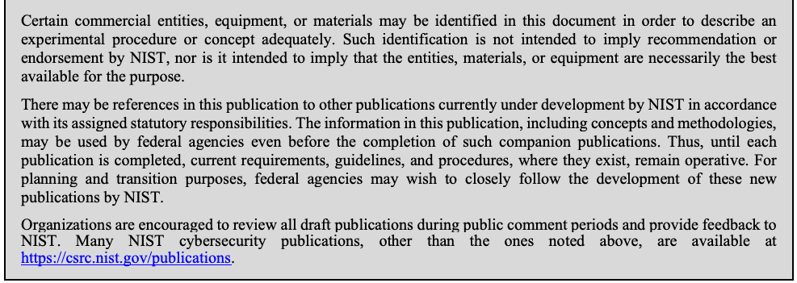
実験手順や概念を適切に説明するため、本書では特定の商業組織、機器、材料を示す場合がある。これらの記載は、NISTによる推奨または保証を意味するものではなく、また、記載された組織、材料、機器が目的に対して必ずしも最適であることを示すものでもない。
There may be references in this publication to other publications currently under development by NIST in accordance with its assigned statutory responsibilities. The information in this publication, including concepts and methodologies, may be used by federal agencies even before the completion of such companion publications. Thus, until each publication is completed, current requirements, guidelines, and procedures, where they exist, remain operative. For planning and transition purposes, federal agencies may wish to closely follow the development of these new publications by NIST.
本刊行物では、NISTが割り当てられた法定責任に基づいて現在策定中の他の刊行物を参照する場合がある。関連刊行物が完成する前であっても、連邦機関は本刊行物の情報（概念や方法論を含む）を利用できる。各刊行物が完成するまでは、既存の要件、指針、手順が引き続き適用される。計画および移行のため、連邦機関はNISTがこれらの新しい刊行物を策定する状況を注意深く確認するとよいであろう。
Organizations are encouraged to review all draft publications during public comment periods and provide feedback to NIST. Many NIST cybersecurity publications, other than the ones noted above, are available at https://csrc.nist.gov/publications.
組織には、公開コメント期間中にすべての草案を確認し、NISTに意見を提出することが推奨される。上記以外のNISTサイバーセキュリティ刊行物の多くは、https://csrc.nist.gov/publications で入手できる。
Submit comments on this publication to: ssdf@nist.gov National Institute of Standards and Technology Attn: Computer Security Division, Information Technology Laboratory 100 Bureau Drive (Mail Stop 8930) Gaithersburg, MD 20899-8930
本刊行物へのコメント送付先：ssdf@nist.gov／米国国立標準技術研究所、宛先：コンピューターセキュリティ部門、情報技術研究所、100 Bureau Drive（Mail Stop 8930）、Gaithersburg, MD 20899-8930
All comments are subject to release under the Freedom of Information Act (FOIA).
すべてのコメントは情報公開法（FOIA）に基づく公開の対象となる。
Reports on Computer Systems Technology
コンピュータシステム技術に関する報告書
The Information Technology Laboratory (ITL) at the National Institute of Standards and Technology (NIST) promotes the U.S. economy and public welfare by providing technical leadership for the Nation’s measurement and standards infrastructure. ITL develops tests, test methods, reference data, proof of concept implementations, and technical analyses to advance the development and productive use of information technology. ITL’s responsibilities include the development of management, administrative, technical, and physical standards and guidelines for the cost-effective security and privacy of other than national security-related information in federal information systems. The Special Publication 800-series reports on ITL’s research, guidelines, and outreach efforts in information system security, and its collaborative activities with industry, government, and academic organizations.
米国国立標準技術研究所（NIST）の情報技術研究所（ITL）は、国の計測・標準インフラに対する技術的リーダーシップを提供することにより、米国経済と公共の福祉を促進している。ITLは、情報技術の開発と生産的な利用を推進するため、テスト、テスト方法、参照データ、概念実証の実装、技術分析を開発している。ITLの責務には、連邦情報システムにおける国家安全保障関連以外の情報について、費用対効果の高いセキュリティとプライバシーを実現するための、管理面、事務面、技術面、物理面の標準およびガイドラインの策定が含まれる。特別刊行物800シリーズは、ITLによる情報システムセキュリティに関する研究、ガイドライン、普及活動、および産業界、政府、学術機関との協働活動を報告するものである。
Abstract
概要
Few software development life cycle (SDLC) models explicitly address software security in detail, so secure software development practices usually need to be added to each SDLC model to ensure that the software being developed is well-secured. This document recommends the Secure Software Development Framework (SSDF) – a core set of high-level secure software development practices that can be integrated into each SDLC implementation. Following such practices should help software producers reduce the number of vulnerabilities in released software, reduce the potential impact of the exploitation of undetected or unaddressed vulnerabilities, and address the root causes of vulnerabilities to prevent future recurrences. Because the framework provides a common vocabulary for secure software development, software acquirers can also use it to foster communications with suppliers in acquisition processes and other management activities.
ソフトウェア開発ライフサイクル（SDLC）モデルのうち、ソフトウェアセキュリティを明示的に詳しく扱うものはほとんどない。そのため、開発中のソフトウェアを十分に保護するには、通常、各SDLCモデルにセキュアなソフトウェア開発プラクティスを追加する必要がある。本書は、各SDLC実装に統合できる高水準のセキュアなソフトウェア開発プラクティスの中核的な集合である、セキュアソフトウェア開発フレームワーク（SSDF）を推奨する。こうしたプラクティスに従うことは、ソフトウェア製作者がリリース済みソフトウェアの脆弱性数を減らし、未検出または未対処の脆弱性の悪用による潜在的影響を軽減し、脆弱性の根本原因に対処して将来の再発を防ぐのに役立つはずである。このフレームワークはセキュアなソフトウェア開発に関する共通の語彙を提供するため、ソフトウェア取得者も、調達プロセスやその他の管理活動において供給者とのコミュニケーションを促進するために利用できる。
Keywords
キーワード
secure software development; Secure Software Development Framework (SSDF); secure software development practices; software acquisition; software development; software development life cycle (SDLC); software security.
セキュアソフトウェア開発、セキュアソフトウェア開発フレームワーク（SSDF）、セキュアソフトウェア開発プラクティス、ソフトウェア取得、ソフトウェア開発、ソフトウェア開発ライフサイクル（SDLC）、ソフトウェアセキュリティ。
Trademark Information
商標情報
All registered trademarks or trademarks belong to their respective organizations.
登録商標または商標はすべて、それぞれの組織に帰属する。
Acknowledgments
謝辞
The authors thank all of the organizations and individuals who provided input for this update to the SSDF. In response to Section 4 of Executive Order (EO) 14028 on “Improving the Nation’s Cybersecurity,” NIST held a June 2021 workshop and received over 150 position papers, many of which suggested secure software development practices, tasks, examples of implementations, and references for consideration for this SSDF update. The authors appreciate all of those suggestions, as well as the input from those who spoke at or attended the workshop and shared their thoughts during or after the workshop.
著者は、SSDFの今回の更新に意見を寄せてくださったすべての組織と個人に感謝する。「国家のサイバーセキュリティ向上」に関する大統領令14028号第4節に対応して、NISTは2021年6月にワークショップを開催し、150件を超える意見書を受領した。その多くには、今回のSSDF更新で検討するためのセキュアソフトウェア開発プラクティス、タスク、実装例、参考資料の提案が含まれていた。提案に加え、ワークショップで発言・参加し、開催中または終了後に考えを共有してくださった方々にも感謝する。
Additionally, the authors appreciate the public comments submitted by dozens of organizations and individuals and wish to acknowledge the particularly helpful feedback from Amazon Web Services, Apiiro, Blackberry, BSA | The Software Alliance, the Enterprise Cloud Coalition, the General Services Administration (GSA), Google, IBM, Medical Imaging & Technology Alliance (MITA), Microsoft, Oracle, the Software Assurance Forum for Excellence in Code (SAFECode), Synopsis, the U.S. Navy, Xoomworks, and Robert Grupe. Representatives of Siemens Energy and Synopsis contributed mappings to new references.
また、数十の組織や個人から寄せられたパブリックコメントに感謝し、とりわけ有益な意見を寄せたAmazon Web Services、Apiiro、Blackberry、BSA | The Software Alliance、Enterprise Cloud Coalition、General Services Administration（GSA）、Google、IBM、Medical Imaging & Technology Alliance（MITA）、Microsoft、Oracle、Software Assurance Forum for Excellence in Code（SAFECode）、Synopsis、米国海軍、Xoomworks、Robert Grupeに謝意を表する。Siemens EnergyとSynopsisの代表者は、新しい参考資料との対応付けに協力した。
The authors thank all of their NIST colleagues for their support throughout the SSDF update, especially Curt Barker, Paul Black, Jon Boyens, Jim Foti, Barbara Guttman, Mat Heyman, Nicole Keller, Matt Scholl, Adam Sedgewick, Kevin Stine, and Isabel Van Wyk.
著者は、SSDFの更新を通じて支援してくださったNISTの同僚全員、特にCurt Barker、Paul Black、Jon Boyens、Jim Foti、Barbara Guttman、Mat Heyman、Nicole Keller、Matt Scholl、Adam Sedgewick、Kevin Stine、Isabel Van Wykに感謝する。
The authors also wish to thank all of the individuals and organizations who provided comments on drafts of the original version of the SSDF, including the Administrative Offices of the U.S. Courts, The Aerospace Corporation, BSA | The Software Alliance, Capitis Solutions, the Consortium for Information & Software Quality (CISQ), HackerOne, Honeycomb Secure Systems, iNovex, Ishpi Information Technologies, the Information Security and Privacy Advisory Board (ISPAB), Juniper Networks, Microsoft, MITA, Naval Sea Systems Command (NAVSEA), NIST, Northrop Grumman, the Office of the Undersecretary of Defense for Research and Engineering, Red Hat, SAFECode, and the Software Engineering Institute (SEI).
著者は、SSDF初版の草案にコメントを寄せたすべての個人・組織にも感謝する。これには、米国裁判所管理局、Aerospace Corporation、BSA | The Software Alliance、Capitis Solutions、Consortium for Information & Software Quality（CISQ）、HackerOne、Honeycomb Secure Systems、iNovex、Ishpi Information Technologies、情報セキュリティ・プライバシー諮問委員会（ISPAB）、Juniper Networks、Microsoft、MITA、海軍海上システム司令部（NAVSEA）、NIST、Northrop Grumman、国防次官研究・工学担当室、Red Hat、SAFECode、Software Engineering Institute（SEI）が含まれる。
Audience
対象読者
There are two primary audiences for this document. The first is software producers (e.g., commercial-off-the-shelf [COTS] product vendors, government-off-the-shelf [GOTS] software developers, custom software developers, internal development teams) regardless of size, sector, or level of maturity. The second is software acquirers – both federal agencies and other organizations. Readers of this document are not expected to be experts in secure software development in order to understand it, but such expertise is required to implement its recommended practices.
本書の主な対象読者は2つある。1つ目は、規模、分野、成熟度を問わないソフトウェア提供者（市販ソフトウェア（COTS）のベンダー、政府向け既製ソフトウェア（GOTS）の開発者、受託開発者、社内開発チームなど）である。2つ目は、連邦機関を含むソフトウェア取得者である。本書を理解するためにセキュアソフトウェア開発の専門知識は必要はないが、推奨プラクティスの実装にはその専門知識が必要である。
Personnel within the following Workforce Categories and Specialty Areas from the National Initiative for Cybersecurity Education (NICE) Cybersecurity Workforce Framework [SP800181] are most likely to find this publication of interest:
全米サイバーセキュリティ教育イニシアチブ（NICE）の「サイバーセキュリティ人材フレームワーク」[SP800181]に定める以下の職種カテゴリーおよび専門分野に属する人々は、本刊行物に関心を持つ可能性が最も高い。
•Securely Provision (SP): Risk Management (RSK), Software Development (DEV), Systems Requirements Planning (SRP), Test and Evaluation (TST), Systems Development (SYS)
•安全なプロビジョニング（SP）：リスク管理（RSK）、ソフトウェア開発（DEV）、システム要件計画（SRP）、テストおよび評価（TST）、システム開発（SYS）
•Operate and Maintain (OM): Systems Analysis (ANA)
•運用および保守（OM）：システム分析（ANA）
•Oversee and Govern (OV): Training, Education, and Awareness (TEA); Cybersecurity Management (MGT); Executive Cyber Leadership (EXL); Program/Project Management (PMA) and Acquisition
•監督および統治（OV）：訓練・教育・啓発（TEA）、サイバーセキュリティ管理（MGT）、経営層サイバーリーダーシップ（EXL）、プログラム／プロジェクト管理（PMA）、調達
•Protect and Defend (PR): Incident Response (CIR), Vulnerability Assessment and Management (VAM)
•防御および保護（PR）：インシデント対応（CIR）、脆弱性評価および管理（VAM）
•Analyze (AN): Threat Analysis (TWA), Exploitation Analysis (EXP)
•分析（AN）：脅威分析（TWA）、悪用分析（EXP）
Note to Readers
読者へのお願い
We encourage you to provide feedback on the SSDF at any time, especially as you implement the SSDF within your own organization and software development efforts. Having inputs from a variety of software producers will be particularly helpful to us in refining and revising the SSDF. The publication will be updated periodically to reflect your inputs and feedback.
SSDFの実装を自組織やソフトウェア開発に取り入れる際は、いつでもご意見をお寄せいただきたい。多様なソフトウェア提供者からの意見は、SSDFの改善や改訂に特に役立つ。ご意見やフィードバックを反映するため、本刊行物は定期的に更新される。
If you are from a standards-developing organization or another organization that has produced a set of secure practices and you would like to map your secure software development standard or guidance to the SSDF, please contact us at ssdf@nist.gov. We would like to introduce you to the National Online Informative References Program (OLIR) so that you can submit your mapping there to augment the existing set of informative references.
標準策定機関、またはセキュアなプラクティスをまとめた組織に所属し、自組織のセキュアソフトウェア開発標準や指針をSSDFに対応付けたい場合は、ssdf@nist.gov までご連絡いただきたい。既存の参考情報を拡充できるよう、対応付けを登録できる「National Online Informative References Program（OLIR）」をご案内する。
Patent Disclosure Notice
特許開示に関する通知
NOTICE: The Information Technology Laboratory (ITL) has requested that holders of patent claims whose use may be required for compliance with the guidance or requirements of this publication disclose such patent claims to ITL. However, holders of patents are not obligated to respond to ITL calls for patents and ITL has not undertaken a patent search in order to identify which, if any, patents may apply to this publication.
通知：情報技術研究所（ITL）は、本刊行物の指針または要件を遵守するために利用が必要となる可能性のある特許請求の保有者に対し、その特許請求をITLに開示するよう求めている。ただし、特許保有者はITLからの特許に関する照会に回答する義務を負わない。また、ITLは、本刊行物に適用され得る特許の有無を特定するための特許調査を実施していない。
As of the date of publication and following call(s) for the identification of patent claims whose use may be required for compliance with the guidance or requirements of this publication, no such patent claims have been identified to ITL.
刊行日現在、本刊行物の指針または要件の遵守に必要となる可能性のある特許請求の特定を呼びかけた結果、そのような特許請求はITLに報告されていない。
No representation is made or implied by ITL that licenses are not required to avoid patent infringement in the use of this publication.
本刊行物を利用する際に特許侵害を避けるためのライセンスが不要であると、ITLが表明または示唆するものではない。
Executive Summary
エグゼクティブサマリー
This document describes a set of fundamental, sound practices for secure software development called the Secure Software Development Framework (SSDF). Organizations should integrate the SSDF throughout their existing software development practices, express their secure software development requirements to third-party suppliers using SSDF conventions, and acquire software that meets the practices described in the SSDF. Using the SSDF helps organizations to meet the following secure software development recommendations:
本書は、セキュアソフトウェア開発フレームワーク（SSDF）と呼ばれる、セキュアソフトウェア開発の基本的で適切なプラクティスをまとめている。組織は、SSDFを既存のソフトウェア開発プラクティス全体に統合し、SSDFの規約を用いて第三者の供給者にセキュア開発要件を伝え、SSDFのプラクティスを満たすソフトウェアを取得すべきである。SSDFを活用することで、組織は次のセキュアソフトウェア開発に関する推奨事項を実現できる。
•Organizations should ensure that their people, processes, and technology are prepared to perform secure software development.
•組織は、人員、プロセス、技術がセキュアソフトウェア開発を実施できる状態にあることを確保すべきである。
•Organizations should protect all components of their software from tampering and unauthorized access.
•組織は、ソフトウェアのすべての構成要素を改ざんや不正アクセスから保護すべきである。
•Organizations should produce well-secured software with minimal security vulnerabilities in its releases.
•組織は、リリース時のセキュリティ脆弱性を最小限に抑えた、安全性の高いソフトウェアを作成すべきである。
•Organizations should identify residual vulnerabilities in their software releases and respond appropriately to address those vulnerabilities and prevent similar ones from occurring in the future.
•組織は、ソフトウェアのリリースに残存する脆弱性を特定し、それらに対処するとともに、将来同様の脆弱性が発生しないよう適切に対応すべきである。
The SSDF does not prescribe how to implement each practice. The focus is on the outcomes of the practices rather than on the tools, techniques, and mechanisms to do so. This means that the SSDF can be used by organizations in any sector or community, regardless of size or cybersecurity sophistication. It can also be used for any type of software development, regardless of technology, platform, programming language, or operating environment.
SSDFは、各プラクティスの実装方法を規定していない。ツール、技法、仕組みではなく、プラクティスがもたらす成果に焦点を当てている。そのため、規模やサイバーセキュリティの成熟度を問わず、あらゆる分野・コミュニティの組織が利用できる。また、技術、プラットフォーム、プログラミング言語、実行環境にかかわらず、あらゆる種類のソフトウェア開発に適用できる。
The SSDF defines only a high-level subset of what organizations may need to do, so organizations should consult the references and other resources for additional information on implementing the practices. Not all practices are applicable to all use cases; organizations should adopt a risk-based approach to determine what practices are relevant, appropriate, and effective to mitigate the threats to their software development practices.
SSDFが定めるのは、組織が必要とする可能性のある取り組みのうち、高水準の一部に限られる。そのため組織は、プラクティスの実装に関する追加情報を参考文献やその他の資料で確認すべきである。すべてのプラクティスがあらゆる利用ケースに当てはまるわけではない。組織は、ソフトウェア開発の脅威を軽減するうえで関連性、適切性、有効性のあるプラクティスを判断するため、リスクベースのアプローチを採用すべきである。
Organizations can communicate how they are addressing the clauses from Section 4 of the President’s Executive Order (EO) on “Improving the Nation’s Cybersecurity (14028)” by referencing the SSDF practices and tasks described in Appendix A.
組織は、付録Aに記載されたSSDFのプラクティスとタスクを参照することで、「国家のサイバーセキュリティ向上」に関する大統領令14028号第4節への対応を説明できる。
Table of Contents
目次
Executive Summary ..................................................................................................... vi
エグゼクティブサマリー .................................................... vi
1 Introduction — 1
1 はじめに — 1
2 The Secure Software Development Framework — 4
2 セキュアソフトウェア開発フレームワーク — 4
References — 20
参考文献 — 20
The SSDF and Executive Order 14028 — 24
SSDFと大統領令14028号 — 24
Acronyms — 25
略語 — 25
Change Log — 27
変更履歴 — 27
List of Tables
表一覧
Table 1: The Secure Software Development Framework (SSDF) Version 1.1 — 5
表1：セキュアソフトウェア開発フレームワーク（SSDF）バージョン1.1 — 5
Table 2: SSDF Practices Corresponding to EO 14028 Clauses — 24
表2：大統領令14028号の条項に対応するSSDFプラクティス — 24
1 Introduction
1 はじめに
A software development life cycle (SDLC)1 is a formal or informal methodology for designing, creating, and maintaining software (including code built into hardware). There are many models for SDLCs, including waterfall, spiral, agile, and – in particular – agile combined with software development and IT operations (DevOps) practices. Few SDLC models explicitly address software security in detail, so secure software development practices usually need to be added to and integrated into each SDLC model. Regardless of which SDLC model is used, secure software development practices should be integrated throughout it for three reasons: to reduce the number of vulnerabilities in released software, to reduce the potential impact of the exploitation of undetected or unaddressed vulnerabilities, and to address the root causes of vulnerabilities to prevent recurrences. Vulnerabilities include not just bugs caused by coding flaws, but also weaknesses caused by security configuration settings, incorrect trust assumptions, and outdated risk analysis. [IR7864]
ソフトウェア開発ライフサイクル（SDLC）¹とは、ソフトウェア（ハードウェアに組み込まれたコードを含む）を設計、作成、保守するための公式または非公式な方法論である。SDLCにはウォーターフォール、スパイラル、アジャイルなど多くのモデルがある。特に、ソフトウェア開発とIT運用（DevOps）のプラクティスを組み合わせたアジャイルもある。ソフトウェアセキュリティを詳細に明示的に扱っているSDLCモデルはほとんどないため、通常、セキュアなソフトウェア開発プラクティスを各SDLCモデルに追加して統合する必要がある。どのSDLCモデルを使う場合も、次の3つの理由から、セキュアなソフトウェア開発プラクティスをライフサイクル全体に統合すべきである。リリースされたソフトウェアの脆弱性数を減らすこと、検出されていない脆弱性や未対処の脆弱性の悪用による潜在的影響を抑えること、脆弱性の根本原因に対処して再発を防ぐことである。脆弱性には、コーディング上の欠陥によるバグだけでなく、セキュリティ設定、誤った信頼の前提、古くなったリスク分析に起因する弱点も含まれる。[IR7864]
Most aspects of security can be addressed multiple times within an SDLC, but in general, the earlier in the SDLC that security is addressed, the less effort and cost is ultimately required to achieve the same level of security. This principle, known as shifting left, is critically important regardless of the SDLC model. Shifting left minimizes any technical debt that would require remediating early security flaws late in development or after the software is in production. Shifting left can also result in software with stronger security and resiliency.
セキュリティの多くの側面はSDLCの複数段階で対処できるが、一般に、SDLCの早い段階で対処するほど、同じレベルのセキュリティを実現するための労力とコストを削減できる。「シフトレフト」と呼ばれるこの原則は、どのSDLCモデルでも極めて重要である。シフトレフトにより、開発後期や本番稼働後に初期のセキュリティ上の欠陥を修正するための技術的負債を最小限に抑えられる。また、より強固で回復力のあるソフトウェアにつながることもある。
There are many existing documents on secure software development practices, including those listed in the References section. This document does not introduce new practices or define new terminology. Instead, it describes a set of high-level practices based on established standards, guidance, and secure software development practice documents. These practices, collectively called the Secure Software Development Framework (SSDF), are intended to help the target audiences achieve secure software development objectives. Many of the practices directly involve the software itself, while others indirectly involve it (e.g., securing the development environment).
セキュアソフトウェア開発プラクティスに関する既存文書は多数あり、参考文献にも挙げている。本書は新しいプラクティスや用語を定義するものではない。確立された標準、指針、セキュアソフトウェア開発の実務文書を基に、高水準のプラクティスをまとめている。これらを総称してセキュアソフトウェア開発フレームワーク（SSDF）と呼び、対象読者がセキュアソフトウェア開発の目標を達成できるよう支援することを意図している。プラクティスの多くはソフトウェア自体に直接関係するが、開発環境の保護など、間接的に関係するものもある。
Future work may expand on this publication and potentially cover topics such as how the SSDF may apply to and vary for particular software development methodologies and associated practices like DevOps, how an organization can transition from their current software development practices to also incorporating the SSDF practices, and how the SSDF could be applied in the context of open-source software. Future work will likely take the form of use cases so that the insights will be more readily applicable to specific types of development environments, and it will likely include collaboration with the open-source community and other groups and organizations.
今後、本刊行物を拡充し、DevOpsなど特定のソフトウェア開発方法論と関連プラクティスにSSDFをどう適用でき、どう異なりうるか、組織が現行のソフトウェア開発プラクティスからSSDFのプラクティスも取り入れる形へどう移行できるか、オープンソースソフトウェアの文脈でSSDFをどう適用できるかなどを扱う可能性がある。今後の作業は、知見を特定の種類の開発環境により適用しやすくするため、ユースケースの形を取る可能性が高く、オープンソースコミュニティや他の団体・組織との協力も含む可能性が高い。
This document identifies secure software development practices but does not prescribe how to implement them. The focus is on the outcomes of the practices to be implemented rather than on the tools, techniques, and mechanisms used to do so. Advantages of specifying the practices at a high level include the following:
本書はセキュアソフトウェア開発プラクティスを示すが、その実装方法は規定しない。実装に用いるツール、技法、仕組みではなく、実施すべきプラクティスの成果に焦点を当てている。高水準でプラクティスを定める利点には、次のものがある。
•Can be used by organizations in any sector or community, regardless of size or cybersecurity sophistication
•規模やサイバーセキュリティの成熟度を問わず、あらゆる分野・コミュニティの組織で利用できる
•Can be applied to software developed to support information technology (IT), industrial control systems (ICS), cyber-physical systems (CPS), or the Internet of Things (IoT)
•情報技術（IT）、産業制御システム（ICS）、サイバーフィジカルシステム（CPS）、モノのインターネット（IoT）を支えるソフトウェアに適用できる
•Can be integrated into any existing software development workflow and automated toolchain; should not negatively affect organizations that already have robust secure software development practices in place
•既存のソフトウェア開発ワークフローや自動化ツールチェーンに統合できる。すでに堅牢なセキュアソフトウェア開発プラクティスを実施している組織に悪影響を及ぼさないはずである
•Makes the practices broadly applicable, not specific to particular technologies, platforms, programming languages, SDLC models, development environments, operating environments, tools, etc.
•技術、プラットフォーム、プログラミング言語、SDLCモデル、開発環境、運用環境、ツールなどに限定されず、幅広く適用できる
•Can help an organization document its secure software development practices today and define its future target practices as part of its continuous improvement process
•組織が現在のセキュアソフトウェア開発プラクティスを文書化し、継続的改善の一環として将来の目標プラクティスを定めるのに役立つ
•Can assist an organization currently using a classic software development model in transitioning its secure software development practices for use with a modern software development model (e.g., agile, DevOps)
•従来型のソフトウェア開発モデルを使う組織が、アジャイルやDevOpsなどの最新モデルでセキュア開発プラクティスを活用できるよう移行を支援する
•Can assist organizations that are procuring and using software to understand secure software development practices employed by their suppliers
•ソフトウェアを調達・利用する組織が、供給者のセキュアソフトウェア開発プラクティスを理解するのに役立つ
This document provides a common language to describe fundamental secure software development practices. This is similar to the approach taken by the Framework for Improving Critical Infrastructure Cybersecurity, also known as the NIST Cybersecurity Framework [NISTCSF].2 Expertise in secure software development is not required to understand the practices. The common language helps facilitate communications about secure software practices among both internal and external organizational stakeholders, such as:
本書は、セキュアソフトウェア開発の基本的なプラクティスを説明するための共通言語を提供する。これは、NISTサイバーセキュリティ・フレームワークとしても知られる「重要インフラのサイバーセキュリティ向上のためのフレームワーク」[NISTCSF]²と同様の考え方である。プラクティスを理解するために、セキュアソフトウェア開発の専門知識は必要ない。この共通言語は、次のような組織内外の関係者間で、セキュアソフトウェアのプラクティスに関する意思疎通を促す。
•Business owners, software developers, project managers and leads, cybersecurity professionals, and operations and platform engineers within an organization who need to clearly communicate with each other about secure software development
•セキュアソフトウェア開発について明確に意思疎通する必要がある、組織内の事業責任者、ソフトウェア開発者、プロジェクトマネージャー／リーダー、サイバーセキュリティ専門家、運用・プラットフォーム技術者
•Software acquirers, including federal agencies and other organizations, that want to define required or desired characteristics for software in their acquisition processes in order to have higher-quality software (particularly with fewer significant security vulnerabilities)3
•調達プロセスでソフトウェアに求める特性や望ましい特性を定め、品質の高いソフトウェア（特に重大なセキュリティ脆弱性が少ないもの）を入手したい連邦機関などのソフトウェア取得者³
•Software producers (e.g., commercial-off-the-shelf [COTS] product vendors, government-off-the-shelf [GOTS] software developers, software developers working within or on behalf of software acquirer organizations) that want to integrate secure software development practices throughout their SDLCs, express their secure software practices to their customers, or define requirements for their suppliers
•ソフトウェア製作者（市販ソフトウェア［COTS］製品ベンダー、政府向け既製ソフトウェア［GOTS］開発者、ソフトウェア取得組織内または同組織のために働く開発者など）で、安全なソフトウェア開発プラクティスをSDLC全体に組み込みたい、顧客に自組織の安全なソフトウェア開発プラクティスを示したい、または供給者向け要件を定めたい者
This document’s practices are not based on the assumption that all organizations have the same security objectives and priorities. Rather, the recommendations reflect that each software producer may have unique security assumptions, and each software acquirer may have unique security needs and requirements. While the aim is for each software producer to follow all applicable practices, the expectation is that the degree to which each practice is implemented and the formality of the implementation will vary based on the producer’s security assumptions. The practices provide flexibility for implementers, but they are also clear to avoid leaving too much open to interpretation.
本書のプラクティスは、すべての組織が同一のセキュリティ目標や優先事項を持つという前提に立っていない。むしろ、各ソフトウェア製作者には固有のセキュリティ上の前提があり、各ソフトウェア取得者には固有のセキュリティニーズと要件があることを踏まえた推奨事項である。各ソフトウェア製作者は適用可能なすべてのプラクティスに従うことが目標だが、各プラクティスの実施度合いと実施の形式性は、製作者のセキュリティ上の前提に応じて異なると想定される。プラクティスは実施者に柔軟性を与える一方、解釈の余地が過度に残らないよう明確にしている。
Although most of these practices are relevant to any software development effort, some are not. For example, if developing a particular piece of software does not involve using a compiler, there would be no need to follow a practice on configuring the compiler to improve executable security. Some practices are foundational, while others are more advanced and depend on certain foundational practices already being in place. Also, practices are not all equally important for all cases.
これらのプラクティスの大半はあらゆるソフトウェア開発作業に関連するが、一部は該当しない。たとえば、あるソフトウェアの開発でコンパイラーを使用しないなら、実行ファイルのセキュリティを高めるためにコンパイラーを設定するプラクティスに従う必要はない。基礎となるプラクティスもあれば、より高度で、特定の基礎プラクティスがすでに実施されていることを前提とするものもある。また、すべての事例で各プラクティスの重要度が同じとは限らない。
Factors such as risk, cost, feasibility, and applicability should be considered when deciding which practices to use and how much time and resources to devote to each practice.4 Automatability is also an important factor to consider, especially for implementing practices at scale. The practices, tasks, and implementation examples represent a starting point to consider; they are meant to be changed and customized, and they are not prioritized. Any stated frequency for performing practices is notional. The intention of the SSDF is not to create a checklist to follow, but to provide a basis for planning and implementing a risk-based approach to adopting secure software development practices.
どのプラクティスを採用するか、また各プラクティスにどれだけの時間と資源を割り当てるかを決める際には、リスク、コスト、実現可能性、適用可能性などの要因を考慮するべきである。⁴ 特に大規模に実施する場合は、自動化可能性も重要な考慮事項である。プラクティス、タスク、実装例は検討の出発点であり、変更やカスタマイズを想定している。優先順位を示すものではない。記載された実施頻度は概念上の例にすぎない。SSDFは従うべきチェックリストを作ることを意図しておらず、安全なソフトウェア開発プラクティスをリスクに基づいて採用するための計画と実施の基盤を提供することを意図している。
The responsibility for implementing the practices may be distributed among different organizations based on the delivery of the software and services (e.g., infrastructure as a service, software as a service, platform as a service, container as a service, serverless). In these situations, it likely follows a shared responsibility model involving the platform/service providers and the tenant organization that is consuming those platforms/services. The tenant organization should establish an agreement with the providers that specifies which party is responsible for each practice and task and how each provider will attest to their conformance with the agreement.
ソフトウェアおよびサービスの提供形態（インフラストラクチャー・アズ・ア・サービス、ソフトウェア・アズ・ア・サービス、プラットフォーム・アズ・ア・サービス、コンテナ・アズ・ア・サービス、サーバーレスなど）に応じて、プラクティスの実施責任が複数の組織に分散することがある。この場合、プラットフォーム／サービス提供者と、それらを利用するテナント組織が責任を分担するモデルに従う可能性が高い。テナント組織は、各プラクティスとタスクの責任主体、および各提供者が合意への適合をどのように証明するかを定めた契約を提供者と締結するべきである。
2 The Secure Software Development Framework
2 セキュアソフトウェア開発フレームワーク
This document defines version 1.1 of the Secure Software Development Framework (SSDF) with fundamental, sound, and secure recommended practices based on established secure software development practice documents. The practices are organized into four groups:
本書は、確立されたセキュアソフトウェア開発の実務文書に基づく、基本的で適切かつ安全な推奨プラクティスを備えた、バージョン1.1のセキュアソフトウェア開発フレームワーク（SSDF）を定める。プラクティスは次の4つのグループに編成されている。
1.Prepare the Organization (PO): Organizations should ensure that their people, processes, and technology are prepared to perform secure software development at the organization level. Many organizations will find some PO practices to also be applicable to subsets of their software development, like individual development groups or projects.
1.組織の準備（PO）：組織は、組織レベルで安全なソフトウェア開発を実施できるよう、人員、プロセス、技術を整備するべきである。多くの組織では、一部のPOプラクティスが、個々の開発グループやプロジェクトなど、ソフトウェア開発の一部にも適用できると分かるだろう。
2.Protect the Software (PS): Organizations should protect all components of their software from tampering and unauthorized access.
2.ソフトウェアの保護（PS）：組織は、ソフトウェアのすべての構成要素を改ざんおよび不正アクセスから保護するべきである。
3.Produce Well-Secured Software (PW): Organizations should produce well-secured software with minimal security vulnerabilities in its releases.
3.十分に安全なソフトウェアの作成（PW）：組織は、リリースに含まれるセキュリティ脆弱性を最小限に抑えた、十分に安全なソフトウェアを作成するべきである。
4.Respond to Vulnerabilities (RV): Organizations should identify residual vulnerabilities in their software releases and respond appropriately to address those vulnerabilities and prevent similar ones from occurring in the future.
4.脆弱性への対応（RV）：組織は、ソフトウェアリリースに残存する脆弱性を特定し、それらに対処するとともに、将来同様の脆弱性が発生するのを防ぐために適切に対応するべきである。
Each practice definition includes the following elements:
各プラクティスの定義には、次の要素が含まれる。
•Practice: The name of the practice and a unique identifier, followed by a brief explanation of what the practice is and why it is beneficial
•プラクティス：プラクティスの名称と一意の識別子、およびその内容と有益である理由を簡潔に説明したもの
•Tasks: One or more actions that may be needed to perform a practice
•タスク：プラクティスを実施するために必要となる場合がある1つ以上の行動
•Notional Implementation Examples: One or more notional examples of types of tools, processes, or other methods that could be used to help implement a task. No examples or combination of examples are required, and the stated examples are not the only feasible options. Some examples may not be applicable to certain organizations and situations.
•概念的な実装例：タスクの実装を支援するために利用できるツール、プロセス、その他の方法の概念的な例。例のいずれも、また例の組み合わせも必須ではなく、記載した例だけが実行可能な選択肢というわけでもない。組織や状況によっては適用できない例もある。
•References: Pointers to one or more established secure development practice documents and their mappings to a particular task. Not all references will apply to all instances of software development.
•参考文献：確立された1つ以上のセキュア開発プラクティス文書、および特定のタスクとの対応関係を示す参照情報。すべての参考文献が、あらゆるソフトウェア開発事例に当てはまるとは限らない。
Table 1 defines the practices. They are only a subset of what an organization may need to do. The information in the table is space constrained; much more information on each practice can be found in the references. Note that the order of the practices, tasks, and notional implementation examples in the table is not intended to imply the sequence of implementation or the relative importance of any practice, task, or example.
表1ではプラクティスを定義する。これは組織が必要とする可能性のある活動の一部にすぎない。表の情報量には紙面上の制約があるため、各プラクティスの詳細は参考文献を参照されたい。表におけるプラクティス、タスク、概念的な実装例の順序は、実施順序や各項目の相対的重要性を示すものではない。
The table uses terms like “sensitive data,” “qualified person,” and “well-secured,” which are not defined in this publication. Organizations adopting the SSDF should define these terms in the context of their own environments and use cases. The same is true for the names of environments, like “development,” “build,” “staging,” “integration,” “test,” “production,” and “distribution,” which vary widely among organizations and projects. Enumerating your environments is necessary in order to secure them properly, and especially to prevent lateral movement of attackers from environment to environment.
表では「機微なデータ」「適格者」「十分に安全」など、本書で定義していない用語を用いている。SSDFを採用する組織は、自らの環境とユースケースに即してこれらの用語を定義するべきである。「開発」「ビルド」「ステージング」「統合」「テスト」「本番」「配布」などの環境名も同様であり、組織やプロジェクトによって大きく異なる。環境を列挙することは、環境を適切に保護し、とりわけ攻撃者が環境間を横方向に移動するのを防ぐために必要である。
Table 1: The Secure Software Development Framework (SSDF) Version 1.1
表1：セキュアソフトウェア開発フレームワーク（SSDF）バージョン1.1
原本PDFの抜粋画像
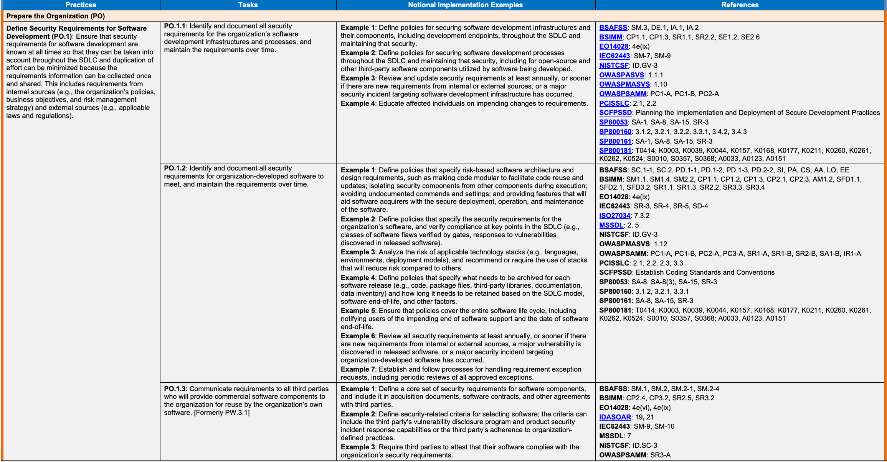
原本PDFの抜粋画像
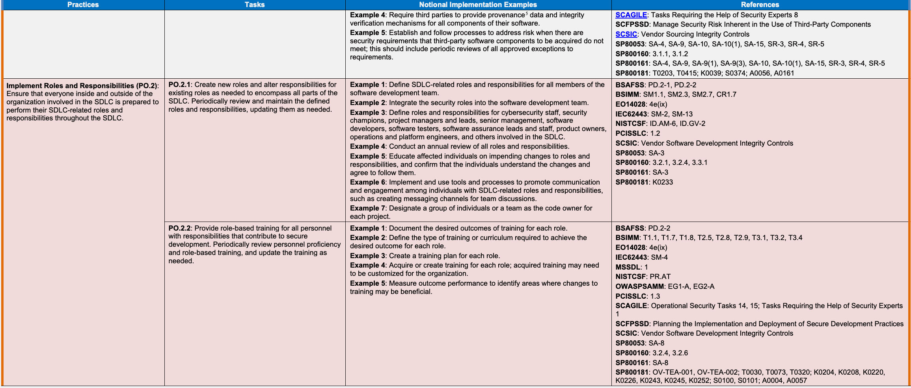
| Practices | Tasks | Notional Implementation Examples | References |
|---|---|---|---|
| PO.2.3: Obtain upper management or authorizing official commitment to secure development, and convey that commitment to all with development-related roles and responsibilities. | Example 1: Appoint a single leader or leadership team to be responsible for the entire secure software development process, including being accountable for releasing software to production and delegating responsibilities as appropriate. Example 2: Increase authorizing officials’ awareness of the risks of developing software without integrating security throughout the development life cycle and the risk mitigation provided by secure development practices. Example 3: Assist upper management in incorporating secure development support into their communications with personnel with development-related roles and responsibilities. Example 4: Educate all personnel with development-related roles and responsibilities on upper management’s commitment to secure development and the importance of secure development to the organization. | BSIMM: SM1.3, SM2.7, CP2.5 EO14028: 4e(ix) NISTCSF: ID.RM-1, ID.SC-1 OWASPSAMM: SM1.A PCISSLC: 1.1 SP800181: T0001, T0004 | |
| Implement Supporting Toolchains (PO.3): Use automation to reduce human effort and improve the accuracy, reproducibility, usability, and comprehensiveness of security practices throughout the SDLC, as well as provide a way to document and demonstrate the use of these practices. Toolchains and tools may be used at different levels of the organization, such as organization-wide or project-specific, and may address a particular part of the SDLC, like a build pipeline. | PO.3.1: Specify which tools or tool types must or should be included in each toolchain to mitigate identified risks, as well as how the toolchain components are to be integrated with each other. | Example 1: Define categories of toolchains, and specify the mandatory tools or tool types to be used for each category. Example 2: Identify security tools to integrate into the developer toolchain. Example 3: Define what information is to be passed between tools and what data formats are to be used. Example 4: Evaluate tools’ signing capabilities to create immutable records/logs for auditability within the toolchain. Example 5: Use automated technology for toolchain management and orchestration. | BSIMM: CR1.4, ST1.4, ST2.5, SE2.7 CNCFSSCP: Securing Materials—Verification; Securing Build Pipelines—Verification, Automation, Secure Authentication/Access; Securing Artefacts—Verification; Securing Deployments—Verification EO14028: 4e(iii), 4e(ix) MSSDL: 8 OWASPSAMM: IR2-B, ST2-B SCAGILE: Tasks Requiring the Help of Security Experts 9 SCSIC: Vendor Software Delivery Integrity Controls SP80053: SA-15 SP800161: SA-15 SP800181: K0013, K0178 |
| PO.3.2: Follow recommended security practices to deploy, operate, and maintain tools and toolchains. | Example 1: Evaluate, select, and acquire tools, and assess the security of each tool. Example 2: Integrate tools with other tools and existing software development processes and workflows. Example 3: Use code-based configuration for toolchains (e.g., pipelines-as-code, toolchains-as-code). Example 4: Implement the technologies and processes needed for reproducible builds. Example 5: Update, upgrade, or replace tools as needed to address tool vulnerabilities or add new tool capabilities. Example 6: Continuously monitor tools and tool logs for potential operational and security issues, including policy violations and anomalous behavior. Example 7: Regularly verify the integrity and check the provenance of each tool to identify potential problems. Example 8: See PW.6 regarding compiler, interpreter, and build tools. Example 9: See PO.5 regarding implementing and maintaining secure environments. | BSAFSS: DE.2 BSIMM: SR1.1, SR1.3, SR3.4 CNCFSSCP: Securing Build Pipelines—Verification, Automation, Controlled Environments, Secure Authentication/Access; Securing Artefacts—Verification, Automation, Controlled Environments, Encryption; Securing Deployments—Verification, Automation EO14028: 4e(i)(F), 4e(ii), 4e(iii), 4e(v), 4e(vi), 4e(ix) IEC62443: SM-7 IR8397: 2.2 OWASPASVS: 1.14.3, 1.14.4, 14.1, 14.2 OWASPMASVS: 7.9 OWASPSCVS: 3, 5 SCAGILE: Tasks Requiring the Help of Security Experts 9 SCFPSSD: Use Current Compiler and Toolchain Versions and Secure Compiler Options SCSIC: Vendor Software Delivery Integrity Controls SP80053: SA-15 SP800161: SA-15 SP800181: K0013, K0178 | |
| PO.3.3: Configure tools to generate artifacts6 of their support of secure software development practices as defined by the organization. | Example 1: Use existing tooling (e.g., workflow tracking, issue tracking, value stream mapping) to create an audit trail of the secure development-related actions that are performed for continuous improvement purposes. Example 2: Determine how often the collected information should be audited, and implement the necessary processes. Example 3: Establish and enforce security and retention policies for artifact data. Example 4: Assign responsibility for creating any needed artifacts that tools cannot generate. | BSAFSS: PD.1-5 BSIMM: SM1.4, SM3.4, SR1.3 CNCFSSCP: Securing Build Pipelines—Verification, Automation, Controlled Environments; Securing Artefacts—Verification EO14028: 4e(i)(F), 4e(ii), 4e(v), 4e(ix) IEC62443: SM-12, SI-2 MSSDL: 8 OWASPSAMM: PC3-B OWASPSCVS: 3.13, 3.14 PCISSLC: 2.5 SCAGILE: Tasks Requiring the Help of Security Experts 9 SCSIC: Vendor Software Delivery Integrity Controls SP80053: SA-15 SP800161: SA-15 SP800181: K0013; T0024 | |
| Define and Use Criteria for Software Security Checks (PO.4): Help ensure that the software resulting from the SDLC meets the organization’s expectations by defining and using criteria for checking the software’s security during development. | PO.4.1: Define criteria for software security checks and track throughout the SDLC. | Example 1: Ensure that the criteria adequately indicate how effectively security risk is being managed. Example 2: Define key performance indicators (KPIs), key risk indicators (KRIs), vulnerability severity scores, and other measures for software security. Example 3: Add software security criteria to existing checks (e.g., the Definition of Done in agile SDLC methodologies). Example 4: Review the artifacts generated as part of the software development workflow system to determine if they meet the criteria. Example 5: Record security check approvals, rejections, and exception requests as part of the workflow and tracking system. Example 6: Analyze collected data in the context of the security successes and failures of each development project, and use the results to improve the SDLC. | BSAFSS: TV.2-1, TV.5-1 BSIMM: SM1.4, SM2.1, SM2.2, SM2.6, SM3.3, CP2.2 EO14028: 4e(iv), 4e(v), 4e(ix) IEC62443: SI-1, SI-2, SVV-3 ISO27034: 7.3.5 MSSDL: 3 OWASPSAMM: PC3-A, DR3-B, IR3-B, ST3-B PCISSLC: 3.3 SP80053: SA-15, SA-15(1) SP800160: 3.2.1, 3.2.5, 3.3.1 SP800161: SA-15, SA-15(1) SP800181: K0153, K0165 |
| PO.4.2: Implement processes, mechanisms, etc. to gather and safeguard the necessary information in support of the criteria. | Example 1: Use the toolchain to automatically gather information that informs security decision-making. Example 2: Deploy additional tools if needed to support the generation and collection of information supporting the criteria. Example 3: Automate decision-making processes utilizing the criteria, and periodically review these processes. Example 4: Only allow authorized personnel to access the gathered information, and prevent any alteration or deletion of the information. | BSAFSS: PD.1-4, PD.1-5 BSIMM: SM1.4, SM2.1, SM2.2, SM3.4 EO14028: 4e(iv), 4e(v), 4e(ix) IEC62443: SI-1, SVV-1, SVV-2, SVV-3, SVV-4 OWASPSAMM: PC3-B PCISSLC: 2.5 SCSIC: Vendor Software Delivery Integrity Controls SP80053: SA-15, SA-15(1), SA-15(11) SP800160: 3.2.5, 3.3.7 SP800161: SA-15, SA-15(1), SA-15(11) SP800181: T0349; K0153 | |
| Implement and Maintain Secure Environments for Software Development (PO.5): Ensure that all components of the environments for software development are strongly protected from internal and external threats to prevent compromises of the environments or the software being developed or maintained within them. Examples of environments for software development include development, build, test, and distribution environments. | PO.5.1: Separate and protect each environment involved in software development. | Example 1: Use multi-factor, risk-based authentication and conditional access for each environment. Example 2: Use network segmentation and access controls to separate the environments from each other and from production environments, and to separate components from each other within each non-production environment, in order to reduce attack surfaces and attackers’ lateral movement and privilege/access escalation. Example 3: Enforce authentication and tightly restrict connections entering and exiting each software development environment, including minimizing access to the internet to only what is necessary. Example 4: Minimize direct human access to toolchain systems, such as build services. Continuously monitor and audit all access attempts and all use of privileged access. Example 5: Minimize the use of production-environment software and services from non-production environments. Example 6: Regularly log, monitor, and audit trust relationships for authorization and access between the environments and between the components within each environment. Example 7: Continuously log and monitor operations and alerts across all components of the development environment to detect, respond, and recover from attempted and actual cyber incidents. Example 8: Configure security controls and other tools involved in separating and protecting the environments to generate artifacts for their activities. Example 9: Continuously monitor all software deployed in each environment for new vulnerabilities, and respond to vulnerabilities appropriately following a risk-based approach. Example 10: Configure and implement measures to secure the environments’ hosting infrastructures following a zero trust architecture7. | BSAFSS: DE.1, IA.1, IA.2 CNCFSSCP: Securing Build Pipelines—Controlled Environments EO14028: 4e(i)(A), 4e(i)(B), 4e(i)(C), 4e(i)(D), 4e(i)(F), 4e(ii), 4e(iii), 4e(v), 4e(vi), 4e(ix) IEC62443: SM-7 NISTCSF: PR.AC-5, PR.DS-7 SCAGILE: Tasks Requiring the Help of Security Experts 11 SCSIC: Vendor Software Delivery Integrity Controls SP80053: SA-3(1), SA-8, SA-15 SP800161: SA-3, SA-8, SA-15 SP800181: OM-NET-001, SP-SYS-001; T0019, T0023, T0144, T0160, T0262, T0438, T0484, T0485, T0553; K0001, K0005, K0007, K0033, K0049, K0056, K0061, K0071, K0104, K0112, K0179, K0326, K0487; S0007, S0084, S0121; A0048 |
| PO.5.2: Secure and harden development endpoints (i.e., endpoints for software designers, developers, testers, builders, etc.) to perform development-related tasks using a risk-based approach. | Example 1: Configure each development endpoint based on approved hardening guides, checklists, etc.; for example, enable FIPS-compliant encryption of all sensitive data at rest and in transit. Example 2: Configure each development endpoint and the development resources to provide the least functionality needed by users and services and to enforce the principle of least privilege. Example 3: Continuously monitor the security posture of all development endpoints, including monitoring and auditing all use of privileged access. Example 4: Configure security controls and other tools involved in securing and hardening development endpoints to generate artifacts for their activities. Example 5: Require multi-factor authentication for all access to development endpoints and development resources. Example 6: Provide dedicated development endpoints on non-production networks for performing all development-related tasks. Provide separate endpoints on production networks for all other tasks. Example 7: Configure each development endpoint following a zero trust architecture. | BSAFSS: DE.1-1, IA.1, IA.2 EO14028: 4e(i)(C), 4e(i)(E), 4e(i)(F), 4e(ii), 4e(iii), 4e(v), 4e(vi), 4e(ix) IEC62443: SM-7 NISTCSF: PR.AC-4, PR.AC-7, PR.IP-1, PR.IP-3, PR.IP-12, PR.PT-1, PR.PT-3, DE.CM SCAGILE: Tasks Requiring the Help of Security Experts 11 SCSIC: Vendor Software Delivery Integrity Controls SP80053: SA-15 SP800161: SA-15 SP800181: OM-ADM-001, SP-SYS-001; T0484, T0485, T0489, T0553; K0005, K0007, K0077, K0088, K0130, K0167, K0205, K0275; S0076, S0097, S0121, S0158; A0155 | |
| Protect Software (PS) | |||
| Protect All Forms of Code from Unauthorized Access and Tampering (PS.1): Help prevent unauthorized changes to code, both inadvertent and intentional, which could circumvent or negate the intended security characteristics of the software. For code that is not intended to be publicly accessible, this helps prevent theft of the software and may make it more difficult or time-consuming for attackers to find vulnerabilities in the software. | PS.1.1: Store all forms of code – including source code, executable code, and configuration-as-code – based on the principle of least privilege so that only authorized personnel, tools, services, etc. have access. | Example 1: Store all source code and configuration-as-code in a code repository, and restrict access to it based on the nature of the code. For example, open-source code intended for public access may need its integrity and availability protected; other code may also need its confidentiality protected. Example 2: Use version control features of the repository to track all changes made to the code with accountability to the individual account. Example 3: Use commit signing for code repositories. Example 4: Have the code owner review and approve all changes made to the code by others. Example 5: Use code signing8 to help protect the integrity of executables. Example 6: Use cryptography (e.g., cryptographic hashes) to help protect file integrity. | BSAFSS: IA.1, IA.2, SM.4-1, DE.1-2 BSIMM: SE2.4 CNCFSSCP: Securing the Source Code—Verification, Automation, Controlled Environments, Secure Authentication; Securing Materials—Automation EO14028: 4e(iii), 4e(iv), 4e(ix) IDASOAR: Fact Sheet 25 IEC62443: SM-6, SM-7, SM-8 NISTCSF: PR.AC-4, PR.DS-6, PR.IP-3 OWASPASVS: 1.10, 10.3.2 OWASPMASVS: 7.1 OWASPSAMM: OE3-B PCISSLC: 5.1, 6.1 SCSIC: Vendor Software Delivery Integrity Controls, Vendor Software Development Integrity Controls SP80053: SA-10 SP800161: SA-8, SA-10 |
原本PDFの抜粋画像
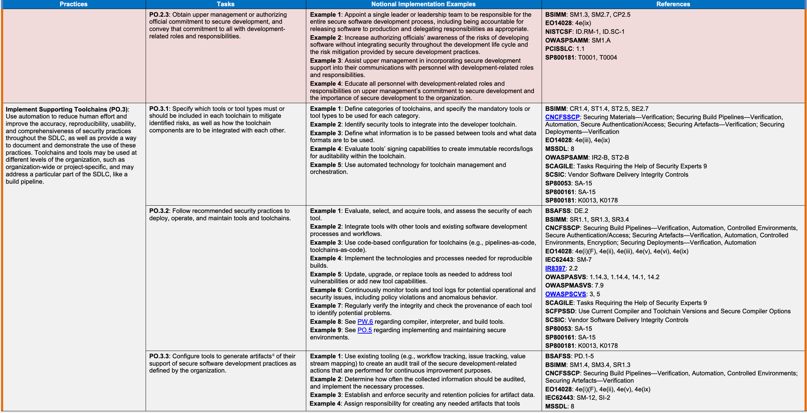
| プラクティス | タスク | 想定実装例 | 参考資料 |
|---|---|---|---|
| PO.2.3：セキュア開発に対する上級管理者または承認権限者のコミットメントを得て、開発関連の役割と責任を持つすべての人にそのコミットメントを伝える。 | 実装例1： ソフトウェアの本番環境へのリリースに対する説明責任を含め、セキュアソフトウェア開発プロセス全体を担う単独の責任者またはリーダーチームを任命し、必要に応じて責任を委任する。 実装例2： 開発ライフサイクル全体にセキュリティを組み込まずにソフトウェアを開発するリスクと、セキュア開発プラクティスによるリスク軽減について、承認権限者の認識を高める。 実装例3： 開発関連の役割と責任を持つ要員への連絡に、セキュア開発に対する支援を組み込めるよう、上級管理者を支援する。 実装例4： 上級管理者のセキュア開発に対するコミットメントと、組織にとってのセキュア開発の重要性を、開発関連の役割と責任を持つすべての要員に周知する。 | BSIMM: SM1.3, SM2.7, CP2.5 EO14028: 4e(ix) NISTCSF: ID.RM-1, ID.SC-1 OWASPSAMM: SM1.A PCISSLC: 1.1 SP800181: T0001, T0004 | |
| 支援ツールチェーンを導入する（PO.3）：自動化を用いて人的作業を減らし、SDLC全体にわたるセキュリティプラクティスの正確性、再現性、使いやすさ、網羅性を高めるとともに、これらのプラクティスの使用を記録・実証する方法を提供する。ツールチェーンとツールは、組織全体やプロジェクト単位など、組織の異なるレベルで使用でき、ビルドパイプラインなどSDLCの特定部分を対象とする場合もある。 | PO.3.1：特定したリスクを軽減するため、各ツールチェーンに含めなければならない、または含めるべきツールやツールの種類と、ツールチェーンの構成要素を相互に統合する方法を指定する。 | 実装例1： ツールチェーンのカテゴリを定義し、各カテゴリで使用する必須のツールまたはツールの種類を指定する。 実装例2： 開発者のツールチェーンに統合するセキュリティツールを特定する。 実装例3： ツール間で渡す情報と、使用するデータ形式を定義する。 実装例4： ツールチェーン内の監査可能性を確保するため、変更できない記録・ログを作成するツールの署名機能を評価する。 実装例5： ツールチェーンの管理とオーケストレーションに自動化技術を使用する。 | BSIMM: CR1.4, ST1.4, ST2.5, SE2.7 CNCFSSCP: Securing Materials—Verification; Securing Build Pipelines—Verification, Automation, Secure Authentication/Access; Securing Artefacts—Verification; Securing Deployments—Verification EO14028: 4e(iii), 4e(ix) MSSDL: 8 OWASPSAMM: IR2-B, ST2-B SCAGILE: Tasks Requiring the Help of Security Experts 9 SCSIC: Vendor Software Delivery Integrity Controls SP80053: SA-15 SP800161: SA-15 SP800181: K0013, K0178 |
| PO.3.2：ツールとツールチェーンの配備、運用、保守に関する推奨セキュリティプラクティスに従う。 | 実装例1： ツールを評価・選定・取得し、各ツールのセキュリティを評価する。 実装例2： 他のツール、および既存のソフトウェア開発プロセスやワークフローとツールを統合する。 実装例3： ツールチェーンにコードによる構成を使用する（パイプライン・アズ・コード、ツールチェーン・アズ・コードなど）。 実装例4： 再現可能なビルドに必要な技術とプロセスを導入する。 実装例5： ツールの脆弱性への対応や新しい機能の追加のため、必要に応じてツールを更新、アップグレード、置換する。 実装例6： ポリシー違反や異常な動作を含む、運用上またはセキュリティ上の問題が生じる可能性を検知するため、ツールとツールのログを継続的に監視する。 実装例7： 問題の可能性を特定するため、各ツールの完全性と来歴を定期的に検証する。 実装例8： コンパイラー、インタープリター、ビルドツールについてはPW.6を参照する。 実装例9： セキュアな環境の導入と維持についてはPO.5を参照する。 | BSAFSS: DE.2 BSIMM: SR1.1, SR1.3, SR3.4 CNCFSSCP: Securing Build Pipelines—Verification, Automation, Controlled Environments, Secure Authentication/Access; Securing Artefacts—Verification, Automation, Controlled Environments, Encryption; Securing Deployments—Verification, Automation EO14028: 4e(i)(F), 4e(ii), 4e(iii), 4e(v), 4e(vi), 4e(ix) IEC62443: SM-7 IR8397: 2.2 OWASPASVS: 1.14.3, 1.14.4, 14.1, 14.2 OWASPMASVS: 7.9 OWASPSCVS: 3, 5 SCAGILE: Tasks Requiring the Help of Security Experts 9 SCFPSSD: Use Current Compiler and Toolchain Versions and Secure Compiler Options SCSIC: Vendor Software Delivery Integrity Controls SP80053: SA-15 SP800161: SA-15 SP800181: K0013, K0178 | |
| PO.3.3：組織が定めたセキュアソフトウェア開発プラクティスを支援したことを示す成果物6を生成するよう、ツールを構成する。 | 実装例1： 既存のツール（ワークフロー追跡、課題追跡、バリューストリームマッピングなど）を用いて、継続的改善を目的として実施したセキュア開発関連の作業の監査証跡を作成する。 実装例2： 収集した情報を監査する頻度を決め、必要なプロセスを導入する。 実装例3： 成果物データのセキュリティと保存に関するポリシーを定め、適用する。 実装例4： 必要な成果物のうちツールで生成できないものについて、作成する責任を割り当てる。 | BSAFSS: PD.1-5 BSIMM: SM1.4, SM3.4, SR1.3 CNCFSSCP: Securing Build Pipelines—Verification, Automation, Controlled Environments; Securing Artefacts—Verification EO14028: 4e(i)(F), 4e(ii), 4e(v), 4e(ix) IEC62443: SM-12, SI-2 MSSDL: 8 OWASPSAMM: PC3-B OWASPSCVS: 3.13, 3.14 PCISSLC: 2.5 SCAGILE: Tasks Requiring the Help of Security Experts 9 SCSIC: Vendor Software Delivery Integrity Controls SP80053: SA-15 SP800161: SA-15 SP800181: K0013; T0024 | |
| ソフトウェアセキュリティチェックの基準を定義して使用する（PO.4）：開発中にソフトウェアのセキュリティを確認する基準を定義して使用することで、SDLCの結果として得られるソフトウェアが組織の期待を満たすようにする。 | PO.4.1：ソフトウェアセキュリティチェックの基準を定義し、SDLC全体で追跡する。 | 実装例1： 基準が、セキュリティリスクをどの程度効果的に管理できているかを適切に示すようにする。 実装例2： ソフトウェアセキュリティについて、重要業績評価指標（KPI）、重要リスク指標（KRI）、脆弱性の深刻度スコアなどの測定基準を定義する。 実装例3： 既存のチェック（アジャイルSDLC手法におけるDefinition of Doneなど）に、ソフトウェアセキュリティ基準を追加する。 実装例4： ソフトウェア開発ワークフローシステムの一部として生成された成果物を確認し、基準を満たしているかを判断する。 実装例5： セキュリティチェックの承認、却下、例外申請を、ワークフローおよび追跡システムの一部として記録する。 実装例6： 各開発プロジェクトのセキュリティ上の成功と失敗を踏まえて収集データを分析し、その結果をSDLCの改善に使用する。 | BSAFSS: TV.2-1, TV.5-1 BSIMM: SM1.4, SM2.1, SM2.2, SM2.6, SM3.3, CP2.2 EO14028: 4e(iv), 4e(v), 4e(ix) IEC62443: SI-1, SI-2, SVV-3 ISO27034: 7.3.5 MSSDL: 3 OWASPSAMM: PC3-A, DR3-B, IR3-B, ST3-B PCISSLC: 3.3 SP80053: SA-15, SA-15(1) SP800160: 3.2.1, 3.2.5, 3.3.1 SP800161: SA-15, SA-15(1) SP800181: K0153, K0165 |
| PO.4.2：基準を支えるために必要な情報を収集して保護するプロセスや仕組みなどを導入する。 | 実装例1： ツールチェーンを用いて、セキュリティに関する意思決定の判断材料となる情報を自動収集する。 実装例2： 必要に応じて追加のツールを配備し、基準を支える情報の生成と収集を支援する。 実装例3： 基準を用いる意思決定プロセスを自動化し、そのプロセスを定期的に見直す。 実装例4： 収集した情報へのアクセスは許可された要員だけに認め、情報の改変や削除を防ぐ。 | BSAFSS: PD.1-4, PD.1-5 BSIMM: SM1.4, SM2.1, SM2.2, SM3.4 EO14028: 4e(iv), 4e(v), 4e(ix) IEC62443: SI-1, SVV-1, SVV-2, SVV-3, SVV-4 OWASPSAMM: PC3-B PCISSLC: 2.5 SCSIC: Vendor Software Delivery Integrity Controls SP80053: SA-15, SA-15(1), SA-15(11) SP800160: 3.2.5, 3.3.7 SP800161: SA-15, SA-15(1), SA-15(11) SP800181: T0349; K0153 | |
| ソフトウェア開発のためのセキュアな環境を導入して維持する（PO.5）：ソフトウェア開発環境のすべての構成要素を内部と外部の脅威から強固に保護し、環境や、その中で開発・保守されるソフトウェアの侵害を防ぐ。ソフトウェア開発環境の例として、開発、ビルド、試験、配布の環境がある。 | PO.5.1：ソフトウェア開発に関わる各環境を分離して保護する。 | 実装例1： 各環境で、多要素認証、リスクベース認証、条件付きアクセスを使用する。 実装例2： ネットワークの分割とアクセス制御により、環境を互いに、また本番環境から分離し、各非本番環境内でも構成要素を互いに分離する。これにより、攻撃対象領域と攻撃者の横方向の移動、特権・アクセス権の昇格を抑える。 実装例3： 各ソフトウェア開発環境に出入りする接続で認証を強制し、接続を厳格に制限する。インターネットへのアクセスも必要なものだけに最小化する。 実装例4： ビルドサービスなどのツールチェーンシステムに対する、人による直接アクセスを最小化する。すべてのアクセス試行と特権アクセスの使用を継続的に監視・監査する。 実装例5： 非本番環境から本番環境のソフトウェアやサービスを使用することを最小化する。 実装例6： 環境間、および各環境内の構成要素間の認可とアクセスに関する信頼関係を定期的に記録、監視、監査する。 実装例7： 開発環境のすべての構成要素にわたって、運用とアラートを継続的に記録・監視し、サイバーインシデントの試行と実際の発生を検知し、対応・復旧する。 実装例8： 環境の分離と保護に使用するセキュリティ管理策やその他のツールを、それぞれの活動を示す成果物を生成するよう構成する。 実装例9： 各環境に配備されたすべてのソフトウェアについて新たな脆弱性を継続的に監視し、リスクに基づくアプローチに従って適切に対応する。 実装例10： ゼロトラストアーキテクチャ7に従い、環境をホストするインフラを保護する対策を構成して導入する。 | BSAFSS: DE.1, IA.1, IA.2 CNCFSSCP: Securing Build Pipelines—Controlled Environments EO14028: 4e(i)(A), 4e(i)(B), 4e(i)(C), 4e(i)(D), 4e(i)(F), 4e(ii), 4e(iii), 4e(v), 4e(vi), 4e(ix) IEC62443: SM-7 NISTCSF: PR.AC-5, PR.DS-7 SCAGILE: Tasks Requiring the Help of Security Experts 11 SCSIC: Vendor Software Delivery Integrity Controls SP80053: SA-3(1), SA-8, SA-15 SP800161: SA-3, SA-8, SA-15 SP800181: OM-NET-001, SP-SYS-001; T0019, T0023, T0144, T0160, T0262, T0438, T0484, T0485, T0553; K0001, K0005, K0007, K0033, K0049, K0056, K0061, K0071, K0104, K0112, K0179, K0326, K0487; S0007, S0084, S0121; A0048 |
| PO.5.2：リスクに基づくアプローチで開発関連の作業を行えるよう、開発エンドポイント（ソフトウェア設計者、開発者、試験担当者、ビルド担当者などのエンドポイント）を保護し、堅牢化する。 | 実装例1： 承認された堅牢化ガイドやチェックリストなどに基づき、各開発エンドポイントを構成する。例えば、保存中および転送中のすべての機微データについて、FIPSに準拠した暗号化を有効にする。 実装例2： 各開発エンドポイントと開発用リソースを、ユーザーとサービスが必要とする最小限の機能を提供し、最小権限の原則を強制するよう構成する。 実装例3： すべての開発エンドポイントのセキュリティ態勢を継続的に監視する。これには、特権アクセスのすべての使用の監視・監査も含む。 実装例4： 開発エンドポイントの保護と堅牢化に使用するセキュリティ管理策やその他のツールを、それぞれの活動を示す成果物を生成するよう構成する。 実装例5： 開発エンドポイントと開発用リソースへのすべてのアクセスに多要素認証を要求する。 実装例6： 開発関連のすべての作業を行うための専用の開発エンドポイントを、非本番ネットワーク上に用意する。それ以外のすべての作業には、本番ネットワーク上に別のエンドポイントを用意する。 実装例7： ゼロトラストアーキテクチャに従って各開発エンドポイントを構成する。 | BSAFSS: DE.1-1, IA.1, IA.2 EO14028: 4e(i)(C), 4e(i)(E), 4e(i)(F), 4e(ii), 4e(iii), 4e(v), 4e(vi), 4e(ix) IEC62443: SM-7 NISTCSF: PR.AC-4, PR.AC-7, PR.IP-1, PR.IP-3, PR.IP-12, PR.PT-1, PR.PT-3, DE.CM SCAGILE: Tasks Requiring the Help of Security Experts 11 SCSIC: Vendor Software Delivery Integrity Controls SP80053: SA-15 SP800161: SA-15 SP800181: OM-ADM-001, SP-SYS-001; T0484, T0485, T0489, T0553; K0005, K0007, K0077, K0088, K0130, K0167, K0205, K0275; S0076, S0097, S0121, S0158; A0155 | |
| ソフトウェアの保護（PS） | |||
| あらゆる形態のコードを不正アクセスと改ざんから保護する（PS.1）：ソフトウェアに意図されたセキュリティ上の特性を回避・無効化しかねない、意図しないものも意図的なものも含む不正なコード変更の防止を支援する。公開を意図していないコードでは、これによってソフトウェアの窃取を防ぎ、攻撃者がソフトウェアの脆弱性を発見することをより困難にしたり、時間がかかるようにしたりできる場合がある。 | PS.1.1：ソースコード、実行可能コード、構成をコードとして記述したものを含む、あらゆる形態のコードを最小権限の原則に基づいて保管し、許可された要員、ツール、サービスなどだけがアクセスできるようにする。 | 実装例1： すべてのソースコードと、構成をコードとして記述したものをコードリポジトリに保管し、コードの性質に応じてアクセスを制限する。例えば、公開を意図したオープンソースコードでは完全性と可用性の保護が必要な場合があり、他のコードでは機密性の保護も必要な場合がある。 実装例2： リポジトリのバージョン管理機能を用いてコードへのすべての変更を追跡し、個々のアカウントに対して説明責任を持たせる。 実装例3： コードリポジトリでコミットへの署名を使用する。 実装例4： 他者がコードに加えたすべての変更を、コードの所有者にレビュー・承認させる。 実装例5： コード署名8を用いて、実行可能ファイルの完全性の保護を支援する。 実装例6： 暗号技術（暗号学的ハッシュなど）を用いて、ファイルの完全性の保護を支援する。 | BSAFSS: IA.1, IA.2, SM.4-1, DE.1-2 BSIMM: SE2.4 CNCFSSCP: Securing the Source Code—Verification, Automation, Controlled Environments, Secure Authentication; Securing Materials—Automation EO14028: 4e(iii), 4e(iv), 4e(ix) IDASOAR: Fact Sheet 25 IEC62443: SM-6, SM-7, SM-8 NISTCSF: PR.AC-4, PR.DS-6, PR.IP-3 OWASPASVS: 1.10, 10.3.2 OWASPMASVS: 7.1 OWASPSAMM: OE3-B PCISSLC: 5.1, 6.1 SCSIC: Vendor Software Delivery Integrity Controls, Vendor Software Development Integrity Controls SP80053: SA-10 SP800161: SA-8, SA-10 |
原本PDFの抜粋画像
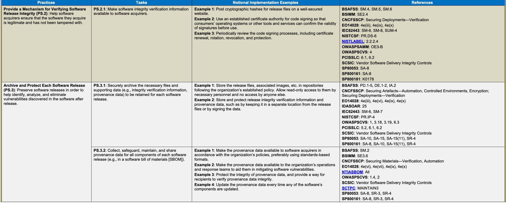
原本PDFの抜粋画像
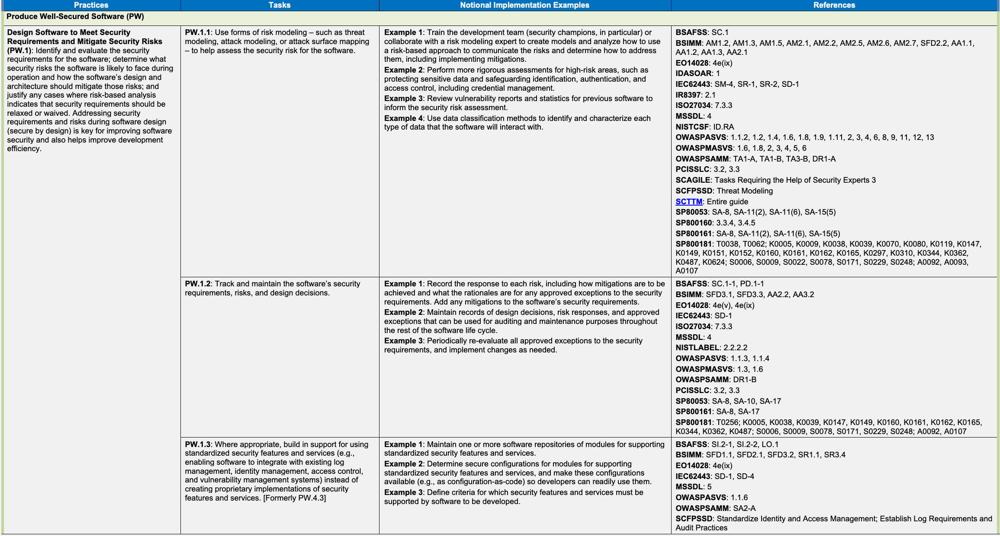
原本PDFの抜粋画像
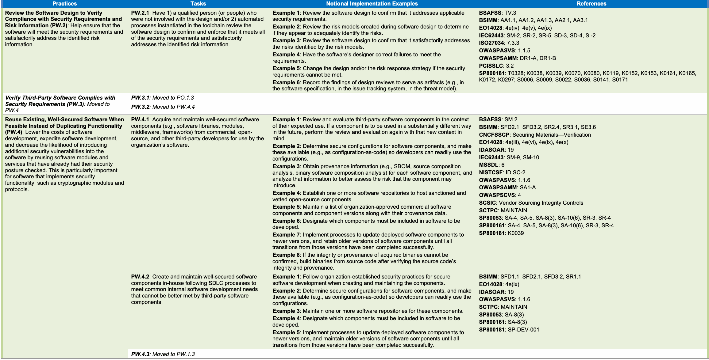
原本PDFの抜粋画像
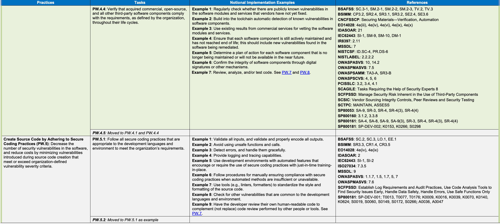
| Practices | Tasks | Notional Implementation Examples | References |
| Configure the Compilation, Interpreter, and Build Processes to Improve Executable Security (PW.6): Decrease the number of security vulnerabilities in the software and reduce costs by eliminating vulnerabilities before testing occurs. | PW.6.1: Use compiler, interpreter, and build tools that offer features to improve executable security. | Example 1: Use up-to-date versions of compiler, interpreter, and build tools. Example 2: Follow change management processes when deploying or updating compiler, interpreter, and build tools, and audit all unexpected changes to tools. Example 3: Regularly validate the authenticity and integrity of compiler, interpreter, and build tools. See PO.3. | BSAFSS: DE.2-1 BSIMM: SE2.4 CNCFSSCP: Securing Build Pipelines—Verification, Automation EO14028: 4e(iv), 4e(ix) IEC62443: SI-2 MSSDL: 8 SCAGILE: Operational Security Task 3 SCFPSSD: Use Current Compiler and Toolchain Versions and Secure Compiler Options SCSIC: Vendor Software Development Integrity Controls SP80053: SA-15 SP800161: SA-15 |
| PW.6.2: Determine which compiler, interpreter, and build tool features should be used and how each should be configured, then implement and use the approved configurations. | Example 1: Enable compiler features that produce warnings for poorly secured code during the compilation process. Example 2: Implement the “clean build” concept, where all compiler warnings are treated as errors and eliminated except those determined to be false positives or irrelevant. Example 3: Perform all builds in a dedicated, highly controlled build environment. Example 4: Enable compiler features that randomize or obfuscate execution characteristics, such as memory location usage, that would otherwise be predictable and thus potentially exploitable. Example 5: Test to ensure that the features are working as expected and are not inadvertently causing any operational issues or other problems. Example 6: Continuously verify that the approved configurations are being used. Example 7: Make the approved tool configurations available as configuration-as-code so developers can readily use them. | BSAFSS: DE.2-3, DE.2-4, DE.2-5 BSIMM: SE2.4, SE3.2 CNCFSSCP: Securing Build Pipelines—Verification, Automation EO14028: 4e(iv), 4e(ix) IEC62443: SI-2 IR8397: 2.5 MSSDL: 8 OWASPASVS: 14.1, 14.2.1 OWASPMASVS: 7.2 PCISSLC: 3.2 SCAGILE: Operational Security Task 8 SCFPSSD: Use Current Compiler and Toolchain Versions and Secure Compiler Options SCSIC: Vendor Software Development Integrity Controls SP80053: SA-15, SR-9 SP800161: SA-15, SR-9 SP800181: K0039, K0070 | |
| Review and/or Analyze Human-Readable Code to Identify Vulnerabilities and Verify Compliance with Security Requirements (PW.7): Help identify vulnerabilities so that they can be corrected before the software is released to prevent exploitation. Using automated methods lowers the effort and resources needed to detect vulnerabilities. Human-readable code includes source code, scripts, and any other form of code that an organization deems human-readable. | PW.7.1: Determine whether code review (a person looks directly at the code to find issues) and/or code analysis (tools are used to find issues in code, either in a fully automated way or in conjunction with a person) should be used, as defined by the organization. | Example 1: Follow the organization’s policies or guidelines for when code review should be performed and how it should be conducted. This may include third-party code and reusable code modules written in-house. Example 2: Follow the organization’s policies or guidelines for when code analysis should be performed and how it should be conducted. Example 3: Choose code review and/or analysis methods based on the stage of the software. | BSIMM: CR1.5 EO14028: 4e(iv), 4e(ix) IEC62443: SM-5, SI-1, SVV-1 NISTLABEL: 2.2.2.2 SCSIC: Peer Reviews and Security Testing SP80053: SA-11 SP800161: SA-11 SP800181: SP-DEV-002; K0013, K0039, K0070, K0153, K0165; S0174 |
| PW.7.2: Perform the code review and/or code analysis based on the organization’s secure coding standards, and record and triage all discovered issues and recommended remediations in the development team’s workflow or issue tracking system. | Example 1: Perform peer review of code, and review any existing code review, analysis, or testing results as part of the peer review. Example 2: Use expert reviewers to check code for backdoors and other malicious content. Example 3: Use peer reviewing tools that facilitate the peer review process, and document all discussions and other feedback. Example 4: Use a static analysis tool to automatically check code for vulnerabilities and compliance with the organization’s secure coding standards with a human reviewing the issues reported by the tool and remediating them as necessary. Example 5: Use review checklists to verify that the code complies with the requirements. Example 6: Use automated tools to identify and remediate documented and verified unsafe software practices on a continuous basis as human-readable code is checked into the code repository. | BSAFSS: TV.2, PD.1-4 BSIMM: CR1.2, CR1.4, CR1.6, CR2.6, CR2.7, CR3.4, CR3.5 EO14028: 4e(iv), 4e(v), 4e(ix) IDASOAR: 3, 4, 5, 14, 15, 48 IEC62443: SI-1, SVV-1, SVV-2 IR8397: 2.3, 2.4 ISO27034: 7.3.6 MSSDL: 9, 10 NISTLABEL: 2.2.2.2 OWASPASVS: 1.1.7, 10 OWASPMASVS: 7.5 OWASPSAMM: IR1-B, IR2-A, IR2-B, IR3-A PCISSLC: 3.2, 4.1 SCAGILE: Operational Security Tasks 4, 7; Tasks Requiring the Help of Security Experts 10 |
原本PDFの抜粋画像
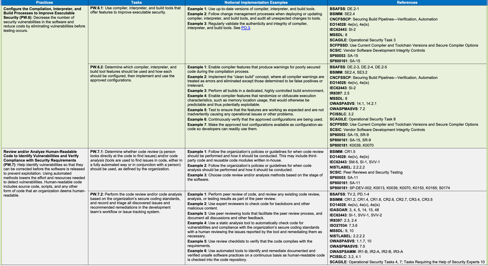
| プラクティス | タスク | 想定実装例 | 参考文献 |
| コンパイル、インタープリター、ビルドプロセスの設定による実行ファイルセキュリティの向上（PW.6）：テスト前に脆弱性を除去し、ソフトウェア中のセキュリティ脆弱性を減らしてコストを削減する。 | PW.6.1：実行ファイルのセキュリティ向上機能を備えたコンパイラー、インタープリター、ビルドツールを使用する。 | 例1：コンパイラー、インタープリター、ビルドツールは最新バージョンを使用する。例2：コンパイラー、インタープリター、ビルドツールの導入・更新時に変更管理プロセスに従い、ツールに対する予期しないすべての変更を監査する。例3：コンパイラー、インタープリター、ビルドツールの真正性と完全性を定期的に検証する。PO.3を参照。 | BSAFSS: DE.2-1 BSIMM: SE2.4 CNCFSSCP: Securing Build Pipelines—Verification, Automation EO14028: 4e(iv), 4e(ix) IEC62443: SI-2 MSSDL: 8 SCAGILE: Operational Security Task 3 SCFPSSD: Use Current Compiler and Toolchain Versions and Secure Compiler Options SCSIC: Vendor Software Development Integrity Controls SP80053: SA-15 SP800161: SA-15 |
| PW.6.2：使用するコンパイラー、インタープリター、ビルドツールの機能と各設定方法を決め、承認済みの設定を実装して使用する。 | 例1：コンパイル中に安全性の低いコードへの警告を出す機能を有効にする。例2：すべての警告をエラーとして扱い、誤検知または無関係と判断したものを除き解消する「クリーンビルド」を実装する。例3：専用の厳格に管理されたビルド環境ですべてをビルドする。例4：メモリー位置など、本来予測可能で悪用され得る実行特性をランダム化または難読化する機能を有効にする。例5：機能が想定どおりに動作し、運用上の問題を招かないことをテストする。例6：承認済み設定が使われていることを継続的に検証する。例7：開発者が容易に利用できるよう、承認済み設定をコードとして提供する。 | BSAFSS: DE.2-3, DE.2-4, DE.2-5 BSIMM: SE2.4, SE3.2 CNCFSSCP: Securing Build Pipelines—Verification, Automation EO14028: 4e(iv), 4e(ix) IEC62443: SI-2 IR8397: 2.5 MSSDL: 8 OWASPASVS: 14.1, 14.2.1 OWASPMASVS: 7.2 PCISSLC: 3.2 SCAGILE: Operational Security Task 8 SCFPSSD: Use Current Compiler and Toolchain Versions and Secure Compiler Options SCSIC: Vendor Software Development Integrity Controls SP80053: SA-15, SR-9 SP800161: SA-15, SR-9 SP800181: K0039, K0070 | |
| 人が読めるコードのレビュー・分析による脆弱性特定と要件適合確認（PW.7）：脆弱性を特定し、リリース前に修正して悪用を防ぐ。自動化により検出に必要な労力と資源を削減できる。人が読めるコードには、ソースコード、スクリプト、その他組織が人間可読とみなす形式のコードが含まれる。 | PW.7.1：組織の定義に従い、人がコードを直接確認して問題を見つけるコードレビュー、および／または、ツールを用いて（完全自動、または人と併用で）コード内の問題を見つけるコード分析を行うかを決める。 | 例1：コードレビューの実施時期と方法に関する組織方針に従う。第三者製コードや社内で作成した再利用コードも対象になり得る。例2：コード分析の実施時期と方法に関する組織方針に従う。例3：ソフトウェアの段階に応じてレビュー／分析方法を選ぶ。 | BSIMM: CR1.5 EO14028: 4e(iv), 4e(ix) IEC62443: SM-5, SI-1, SVV-1 NISTLABEL: 2.2.2.2 SCSIC: Peer Reviews and Security Testing SP80053: SA-11 SP800161: SA-11 SP800181: SP-DEV-002; K0013, K0039, K0070, K0153, K0165; S0174 |
| PW.7.2：組織のセキュアコーディング標準に基づいてコードレビュー／分析を実施し、発見したすべての問題と推奨修正を開発チームのワークフローまたは課題追跡システムに記録してトリアージする。 | 例1：コードの相互レビューを実施し、その過程で既存のレビュー、分析、テスト結果も確認する。例2：専門家レビュー担当者にバックドアやその他の悪意ある内容を確認させる。例3：相互レビュー支援ツールを使い、議論やフィードバックをすべて記録する。例4：静的解析ツールで脆弱性と組織標準への適合を自動確認し、必要に応じて人が報告内容をレビューして修正する。例5：要件適合を確認するレビュー用チェックリストを用いる。例6：人が読めるコードがリポジトリーにチェックインされるたび、文書化・検証済みの安全でない慣行を自動的に継続検出・修正する。 | BSAFSS: TV.2, PD.1-4 BSIMM: CR1.2, CR1.4, CR1.6, CR2.6, CR2.7, CR3.4, CR3.5 EO14028: 4e(iv), 4e(v), 4e(ix) IDASOAR: 3, 4, 5, 14, 15, 48 IEC62443: SI-1, SVV-1, SVV-2 IR8397: 2.3, 2.4 ISO27034: 7.3.6 MSSDL: 9, 10 NISTLABEL: 2.2.2.2 OWASPASVS: 1.1.7, 10 OWASPMASVS: 7.5 OWASPSAMM: IR1-B, IR2-A, IR2-B, IR3-A PCISSLC: 3.2, 4.1 SCAGILE: Operational Security Tasks 4, 7; Tasks Requiring the Help of Security Experts 10 |
| Practices | Tasks | Notional Implementation Examples | References |
| Example 7: Identify and document the root causes of discovered issues. Example 8: Document lessons learned from code review and analysis in a wiki that developers can access and search. | SCFPSSD: Use Code Analysis Tools to Find Security Issues Early, Use Static Analysis Security Testing Tools, Perform Manual Verification of Security Features/Mitigations SCSIC: Peer Reviews and Security Testing SP80053: SA-11, SA-11(1), SA-11(4), SA-15(7) SP800161: SA-11, SA-11(1), SA-11(4), SA-15(7) SP800181: SP-DEV-001, SP-DEV-002; T0013, T0111, T0176, T0267, T0516; K0009, K0039, K0070, K0140, K0624; S0019, S0060, S0078, S0137, S0149, S0167, S0174, S0242, S0266; A0007, A0015, A0036, A0044, A0047 | ||
| Test Executable Code to Identify Vulnerabilities and Verify Compliance with Security Requirements (PW.8): Help identify vulnerabilities so that they can be corrected before the software is released in order to prevent exploitation. Using automated methods lowers the effort and resources needed to detect vulnerabilities and improves traceability and repeatability. Executable code includes binaries, directly executed bytecode and source code, and any other form of code that an organization deems executable. | PW.8.1: Determine whether executable code testing should be performed to find vulnerabilities not identified by previous reviews, analysis, or testing and, if so, which types of testing should be used. | Example 1: Follow the organization’s policies or guidelines for when code testing should be performed and how it should be conducted (e.g., within a sandboxed environment). This may include third-party executable code and reusable executable code modules written in-house. Example 2: Choose testing methods based on the stage of the software. | BSAFSS: TV.3 BSIMM: PT2.3 EO14028: 4e(ix) IEC62443: SVV-1, SVV-2, SVV-3, SVV-4, SVV-5 NISTLABEL: 2.2.2.2 SCSIC: Peer Reviews and Security Testing SP80053: SA-11 SP800161: SA-11 SP800181: SP-DEV-001, SP-DEV-002; T0456; K0013, K0039, K0070, K0153, K0165, K0342, K0367, K0536, K0624; S0001, S0015, S0026, S0061, S0083, S0112, S0135 |
| PW.8.2: Scope the testing, design the tests, perform the testing, and document the results, including recording and triaging all discovered issues and recommended remediations in the development team’s workflow or issue tracking system. | Example 1: Perform robust functional testing of security features. Example 2: Integrate dynamic vulnerability testing into the project’s automated test suite. Example 3: Incorporate tests for previously reported vulnerabilities into the project’s test suite to ensure that errors are not reintroduced. Example 4: Take into consideration the infrastructures and technology stacks that the software will be used with in production when developing test plans. Example 5: Use fuzz testing tools to find issues with input handling. Example 6: If resources are available, use penetration testing to simulate how an attacker might attempt to compromise the software in high-risk scenarios. Example 7: Identify and record the root causes of discovered issues. Example 8: Document lessons learned from code testing in a wiki that developers can access and search. Example 9: Use source code, design records, and other resources when developing test plans. | BSAFSS: TV.3, TV.5, PD.1-4 BSIMM: ST1.1, ST1.3, ST1.4, ST2.4, ST2.5, ST2.6, ST3.3, ST3.4, ST3.5, ST3.6, PT1.1, PT1.2, PT1.3, PT3.1 EO14028: 4e(iv), 4e(v), 4e(ix) IDASOAR: 7, 8, 10, 11, 38, 39, 43, 44, 48, 55, 56, 57 IEC62443: SM-5, SM-13, SI-1, SVV-1, SVV-2, SVV-3, SVV-4, SVV-5 IR8397: 2.6, 2.7, 2.8, 2.9, 2.10, 2.11 ISO27034: 7.3.6 MSSDL: 10, 11 NISTLABEL: 2.2.2.2 OWASPMASVS: 7.5 OWASPSAMM: ST1-A, ST1-B, ST2-A, ST2-B, ST3-A PCISSLC: 4.1 SCAGILE: Operational Security Tasks 10, 11; Tasks Requiring the Help of Security Experts 4, 5, 6, 7 SCFPSSD: Perform Dynamic Analysis Security Testing, Fuzz Parsers, Network Vulnerability Scanning, Perform Automated Functional Testing of Security Features/Mitigations, Perform Penetration Testing SCSIC: Peer Reviews and Security Testing SP80053: SA-11, SA-11(5), SA-11(8), SA-15(7) SP800161: SA-11, SA-11(5), SA-11(8), SA-15(7) SP800181: SP-DEV-001, SP-DEV-002; T0013, T0028, T0169, T0176, T0253, T0266, T0456, T0516; K0009, K0039, K0070, K0272, K0339, K0342, K0362, K0536, K0624; S0001, S0015, S0046, S0051, S0078, S0081, S0083, S0135, S0137, S0167, S0242; A0015 |
原本PDFの抜粋画像
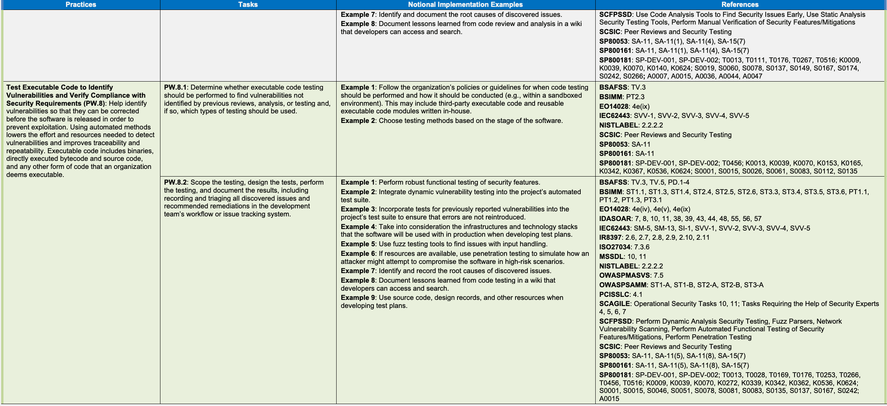
| プラクティス | タスク | 想定実装例 | 参考文献 |
| 例7：発見した問題の根本原因を特定し、記録する。例8：コードレビューと解析から得た教訓を、開発者がアクセスして検索できるWikiに記録する。 | SCFPSSD: Use Code Analysis Tools to Find Security Issues Early, Use Static Analysis Security Testing Tools, Perform Manual Verification of Security Features/Mitigations SCSIC: Peer Reviews and Security Testing SP80053: SA-11, SA-11(1), SA-11(4), SA-15(7) SP800161: SA-11, SA-11(1), SA-11(4), SA-15(7) SP800181: SP-DEV-001, SP-DEV-002; T0013, T0111, T0176, T0267, T0516; K0009, K0039, K0070, K0140, K0624; S0019, S0060, S0078, S0137, S0149, S0167, S0174, S0242, S0266; A0007, A0015, A0036, A0044, A0047 | ||
| 脆弱性を特定し、セキュリティ要件への適合を検証するための実行可能コードのテスト（PW.8）：脆弱性を特定し、ソフトウェアのリリース前に修正できるようにして、悪用を防ぐ。自動化手法は脆弱性の検出に必要な労力とリソースを減らし、追跡可能性と再現性を高める。実行可能コードには、バイナリ、直接実行されるバイトコードおよびソースコード、ならびに組織が実行可能と判断するその他の形式のコードが含まれる。 | PW.8.1：過去のレビュー、解析、テストで特定されなかった脆弱性を見つけるために実行可能コードのテストを行うべきか判断し、行う場合はどの種類のテストを使うか決める。 | 例1：コードテストを実施する時期と方法（サンドボックス環境内など）について、組織の方針またはガイドラインに従う。対象には、第三者の実行可能コードや、社内で作成し再利用する実行可能コードモジュールも含まれ得る。例2：ソフトウェアの開発段階に応じてテスト方法を選ぶ。 | BSAFSS: TV.3 BSIMM: PT2.3 EO14028: 4e(ix) IEC62443: SVV-1, SVV-2, SVV-3, SVV-4, SVV-5 NISTLABEL: 2.2.2.2 SCSIC: Peer Reviews and Security Testing SP80053: SA-11 SP800161: SA-11 SP800181: SP-DEV-001, SP-DEV-002; T0456; K0013, K0039, K0070, K0153, K0165, K0342, K0367, K0536, K0624; S0001, S0015, S0026, S0061, S0083, S0112, S0135 |
| PW.8.2：テスト範囲を定め、テストを設計・実施して結果を記録する。発見したすべての問題と推奨する修正策を、開発チームのワークフローまたは課題追跡システムに記録してトリアージする。 | 例1：セキュリティ機能の堅牢な機能テストを行う。例2：動的脆弱性テストをプロジェクトの自動テストスイートに組み込む。例3：過去に報告された脆弱性のテストをプロジェクトのテストスイートに組み込み、問題の再発を防ぐ。例4：テスト計画を作成する際、ソフトウェアの本番利用先となるインフラストラクチャと技術スタックを考慮する。例5：ファジングツールを使い、入力処理の問題を見つける。例6：リソースがあれば、高リスクの状況で攻撃者がソフトウェアを侵害しようとする手法を模擬するペネトレーションテストを行う。例7：発見した問題の根本原因を特定し、記録する。例8：コードテストから得た教訓を、開発者がアクセスして検索できるWikiに記録する。例9：テスト計画の作成に、ソースコード、設計記録、その他の資料を活用する。 | BSAFSS: TV.3, TV.5, PD.1-4 BSIMM: ST1.1, ST1.3, ST1.4, ST2.4, ST2.5, ST2.6, ST3.3, ST3.4, ST3.5, ST3.6, PT1.1, PT1.2, PT1.3, PT3.1 EO14028: 4e(iv), 4e(v), 4e(ix) IDASOAR: 7, 8, 10, 11, 38, 39, 43, 44, 48, 55, 56, 57 IEC62443: SM-5, SM-13, SI-1, SVV-1, SVV-2, SVV-3, SVV-4, SVV-5 IR8397: 2.6, 2.7, 2.8, 2.9, 2.10, 2.11 ISO27034: 7.3.6 MSSDL: 10, 11 NISTLABEL: 2.2.2.2 OWASPMASVS: 7.5 OWASPSAMM: ST1-A, ST1-B, ST2-A, ST2-B, ST3-A PCISSLC: 4.1 SCAGILE: Operational Security Tasks 10, 11; Tasks Requiring the Help of Security Experts 4, 5, 6, 7 SCFPSSD: Perform Dynamic Analysis Security Testing, Fuzz Parsers, Network Vulnerability Scanning, Perform Automated Functional Testing of Security Features/Mitigations, Perform Penetration Testing SCSIC: Peer Reviews and Security Testing SP80053: SA-11, SA-11(5), SA-11(8), SA-15(7) SP800161: SA-11, SA-11(5), SA-11(8), SA-15(7) SP800181: SP-DEV-001, SP-DEV-002; T0013, T0028, T0169, T0176, T0253, T0266, T0456, T0516; K0009, K0039, K0070, K0272, K0339, K0342, K0362, K0536, K0624; S0001, S0015, S0046, S0051, S0078, S0081, S0083, S0135, S0137, S0167, S0242; A0015 |
| Practices | Tasks | Notional Implementation Examples | References |
| Configure Software to Have Secure Settings by Default (PW.9): Help improve the security of the software at the time of installation to reduce the likelihood of the software being deployed with weak security settings, putting it at greater risk of compromise. | PW.9.1: Define a secure baseline by determining how to configure each setting that has an effect on security or a security-related setting so that the default settings are secure and do not weaken the security functions provided by the platform, network infrastructure, or services. | Example 1: Conduct testing to ensure that the settings, including the default settings, are working as expected and are not inadvertently causing any security weaknesses, operational issues, or other problems. | BSAFSS: CF.1 BSIMM: SE2.2 EO14028: 4e(iv), 4e(ix) IDASOAR: 23 IEC62443: SD-4, SVV-1, SG-1 ISO27034: 7.3.5 SCAGILE: Tasks Requiring the Help of Security Experts 12 SCSIC: Vendor Software Delivery Integrity Controls, Vendor Software Development Integrity Controls SP800181: SP-DEV-002; K0009, K0039, K0073, K0153, K0165, K0275, K0531; S0167 |
| PW.9.2: Implement the default settings (or groups of default settings, if applicable), and document each setting for software administrators. | Example 1: Verify that the approved configuration is in place for the software. Example 2: Document each setting’s purpose, options, default value, security relevance, potential operational impact, and relationships with other settings. Example 3: Use authoritative programmatic technical mechanisms to record how each setting can be implemented and assessed by software administrators. Example 4: Store the default configuration in a usable format and follow change control practices for modifying it (e.g., configuration-as-code). | BSAFSS: CF.1 BSIMM: SE2.2 EO14028: 4e(iv), 4e(ix) IDASOAR: 23 IEC62443: SG-3 OWASPSAMM: OE1-A PCISSLC: 8.1, 8.2 SCAGILE: Tasks Requiring the Help of Security Experts 12 SCFPSSD: Verify Secure Configurations and Use of Platform Mitigation SCSIC: Vendor Software Delivery Integrity Controls, Vendor Software Development Integrity Controls SP80053: SA-5, SA-8(23) SP800161: SA-5, SA-8(23) SP800181: SP-DEV-001; K0009, K0039, K0073, K0153, K0165, K0275, K0531 | |
| Respond to Vulnerabilities (RV) | |||
| Identify and Confirm Vulnerabilities on an Ongoing Basis (RV.1): Help ensure that vulnerabilities are identified more quickly so that they can be remediated more quickly in accordance with risk, reducing the window of opportunity for attackers. | RV.1.1: Gather information from software acquirers, users, and public sources on potential vulnerabilities in the software and third-party components that the software uses, and investigate all credible reports. | Example 1: Monitor vulnerability databases9, security mailing lists, and other sources of vulnerability reports through manual or automated means. Example 2: Use threat intelligence sources to better understand how vulnerabilities in general are being exploited. Example 3: Automatically review provenance and software composition data for all software components to identify any new vulnerabilities they have. | BSAFSS: VM.1-3, VM.3 BSIMM: AM1.5, CMVM1.2, CMVM2.1, CMVM3.4, CMVM3.7 CNCFSSCP: Securing Materials—Verification EO14028: 4e(iv), 4e(vi), 4e(viii), 4e(ix) IEC62443: DM-1, DM-2, DM-3 ISO29147: 6.2.1, 6.2.2, 6.2.4, 6.3, 6.5 ISO30111: 7.1.3 OWASPSAMM: IM1-A, IM2-B, EH1-B OWASPSCVS: 4 PCISSLC: 3.4, 4.1, 9.1 SCAGILE: Operational Security Task 5 SCFPSSD: Vulnerability Response and Disclosure SCTPC: MONITOR1 SP80053: SA-10, SR-3, SR-4 SP800161: SA-10, SR-3, SR-4 SP800181: K0009, K0038, K0040, K0070, K0161, K0362; S0078 |
| RV.1.2: Review, analyze, and/or test the software’s code to identify or confirm the presence of previously undetected vulnerabilities. | Example 1: Configure the toolchain to perform automated code analysis and testing on a regular or continuous basis for all supported releases. Example 2: See PW.7 and PW.8. | BSAFSS: VM.1-2, VM.2-1 BSIMM: CMVM3.1 EO14028: 4e(iv), 4e(vi), 4e(viii), 4e(ix) IEC62443: SI-1, SVV-2, SVV-3, SVV-4, DM-1, DM-2 ISO27034: 7.3.6 | |
原本PDFの抜粋画像
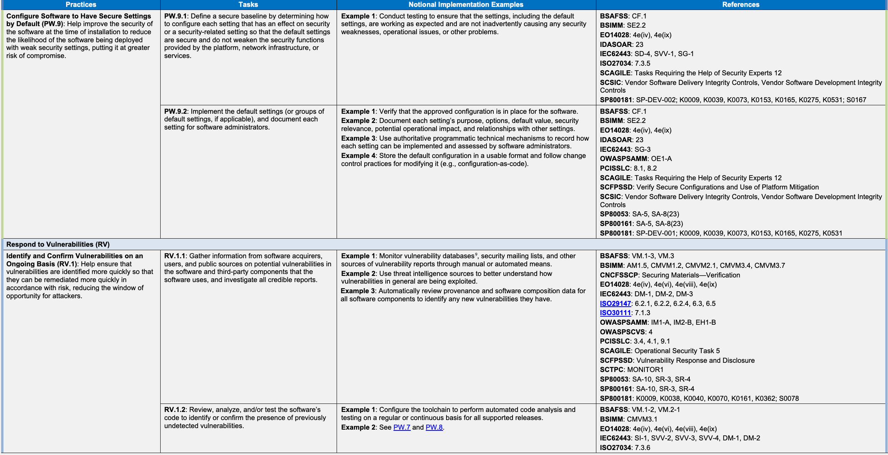
| プラクティス | タスク | 想定実装例 | 参考文献 |
| ソフトウェアの既定設定をセキュアにする（PW.9）：インストール時のソフトウェアセキュリティを高め、弱い設定のまま配備され侵害リスクが高まる可能性を減らす。 | PW.9.1：セキュリティに影響する各設定またはセキュリティ関連の設定の構成方法を決めてセキュアなベースラインを定義し、既定設定が安全で、プラットフォーム、ネットワーク基盤、サービスのセキュリティ機能を弱めないようにする。 | 例1：設定（既定値を含む）が想定どおりに機能し、セキュリティ上の弱点、運用上の問題、その他の問題を意図せず生じさせないことをテストする。 | BSAFSS: CF.1 BSIMM: SE2.2 EO14028: 4e(iv), 4e(ix) IDASOAR: 23 IEC62443: SD-4, SVV-1, SG-1 ISO27034: 7.3.5 SCAGILE: Tasks Requiring the Help of Security Experts 12 SCSIC: Vendor Software Delivery Integrity Controls, Vendor Software Development Integrity Controls SP800181: SP-DEV-002; K0009, K0039, K0073, K0153, K0165, K0275, K0531; S0167 |
| PW.9.2：既定設定（該当する場合は設定グループ）を実装し、ソフトウェア管理者向けに各設定を文書化する。 | 例1：承認済みの構成がソフトウェアに設定されていることを確認する。例2：各設定の目的、選択肢、既定値、セキュリティ上の関連性、運用への影響、他の設定との関係を文書化する。例3：管理者が各設定を実装・評価できる方法を、権威ある、プログラムによる技術的な仕組みを用いて記録する。例4：既定構成を使いやすい形式で保存し、変更時には変更管理の手順に従う（コードとしての設定など）。 | BSAFSS: CF.1 BSIMM: SE2.2 EO14028: 4e(iv), 4e(ix) IDASOAR: 23 IEC62443: SG-3 OWASPSAMM: OE1-A PCISSLC: 8.1, 8.2 SCAGILE: Tasks Requiring the Help of Security Experts 12 SCFPSSD: Verify Secure Configurations and Use of Platform Mitigation SCSIC: Vendor Software Delivery Integrity Controls, Vendor Software Development Integrity Controls SP80053: SA-5, SA-8(23) SP800161: SA-5, SA-8(23) SP800181: SP-DEV-001; K0009, K0039, K0073, K0153, K0165, K0275, K0531 | |
| 脆弱性への対応（RV） | |||
| 脆弱性の継続的な特定・確認（RV.1）：脆弱性をより早く特定し、リスクに応じてより迅速に修正することで、攻撃者に悪用の機会を与える期間を短縮する。 | RV.1.1：ソフトウェアと、そのソフトウェアが利用する第三者製構成要素の潜在的脆弱性について、ソフトウェア取得者、利用者、公的情報源から情報を収集し、信頼できる報告をすべて調査する。 | 例1：脆弱性データベース⁹、セキュリティメーリングリスト、その他の脆弱性報告情報源を手作業または自動で監視する。例2：脆弱性が一般にどのように悪用されているかを理解するため、脅威インテリジェンス情報源を活用する。例3：すべてのソフトウェア構成要素の来歴と構成データを自動的に確認し、新たな脆弱性を特定する。 | BSAFSS: VM.1-3, VM.3 BSIMM: AM1.5, CMVM1.2, CMVM2.1, CMVM3.4, CMVM3.7 CNCFSSCP: Securing Materials—Verification EO14028: 4e(iv), 4e(vi), 4e(viii), 4e(ix) IEC62443: DM-1, DM-2, DM-3 ISO29147: 6.2.1, 6.2.2, 6.2.4, 6.3, 6.5 ISO30111: 7.1.3 OWASPSAMM: IM1-A, IM2-B, EH1-B OWASPSCVS: 4 PCISSLC: 3.4, 4.1, 9.1 SCAGILE: Operational Security Task 5 SCFPSSD: Vulnerability Response and Disclosure SCTPC: MONITOR1 SP80053: SA-10, SR-3, SR-4 SP800161: SA-10, SR-3, SR-4 SP800181: K0009, K0038, K0040, K0070, K0161, K0362; S0078 |
| RV.1.2：これまで検出されていない脆弱性の有無を特定・確認するため、ソフトウェアコードをレビュー、分析、またはテストする。 | 例1：サポート対象のすべてのリリースについて、定期的または継続的に自動コード分析とテストを実施するようツールチェーンを設定する。例2：PW.7とPW.8を参照する。 | BSAFSS: VM.1-2, VM.2-1 BSIMM: CMVM3.1 EO14028: 4e(iv), 4e(vi), 4e(viii), 4e(ix) IEC62443: SI-1, SVV-2, SVV-3, SVV-4, DM-1, DM-2 ISO27034: 7.3.6 | |
| Practices | Tasks | Notional Implementation Examples | References |
| ISO29147: 6.4 | |||
| ISO30111: 7.1.4 | |||
| PCISSLC: 3.4, 4.1 | |||
| SCAGILE: Operational Security Tasks 10, 11 | |||
| SP80053: SA-11 | |||
| SP800161: SA-11 | |||
| SP800181: SP-DEV-002; K0009, K0039, K0153 | |||
| RV.1.3: Have a policy that addresses vulnerability disclosure and remediation, and implement the roles, responsibilities, and processes needed to support that policy. | Example 1: Establish a vulnerability disclosure program, and make it easy for security researchers to learn about your program and report possible vulnerabilities. Example 2: Have a Product Security Incident Response Team (PSIRT) and processes in place to handle the responses to vulnerability reports and incidents, including communications plans for all stakeholders. Example 3: Have a security response playbook to handle a generic reported vulnerability, a report of zero-days, a vulnerability being exploited in the wild, and a major ongoing incident involving multiple parties and open-source software components. Example 4: Periodically conduct exercises of the product security incident response processes. | BSAFSS: VM.1-1, VM.2 | |
| BSIMM: CMVM1.1, CMVM2.1, CMVM3.3, CMVM3.7 | |||
| EO14028: 4e(viii), 4e(ix) | |||
| IEC62443: DM-1, DM-2, DM-3, DM-4, DM-5 | |||
| ISO29147: All | |||
| ISO30111: All | |||
| MSSDL: 12 | |||
| NISTLABEL: 2.2.2.3 | |||
| OWASPMASVS: 1.11 | |||
| OWASPSAMM: IM1-A, IM1-B, IM2-A, IM2-B | |||
| PCISSLC: 9.2, 9.3 | |||
| SCFPSSD: Vulnerability Response and Disclosure | |||
| SP80053: SA-15(10) | |||
| SP800160: 3.3.8 | |||
| SP800161: SA-15(10) | |||
| SP800181: K0041, K0042, K0151, K0292, K0317; S0054; A0025 | |||
| SP800216: All | |||
| Assess, Prioritize, and Remediate Vulnerabilities (RV.2): Help ensure that vulnerabilities are remediated in accordance with risk to reduce the window of opportunity for attackers. | RV.2.1: Analyze each vulnerability to gather sufficient information about risk to plan its remediation or other risk response. | Example 1: Use existing issue tracking software to record each vulnerability. Example 2: Perform risk calculations for each vulnerability based on estimates of its exploitability, the potential impact if exploited, and any other relevant characteristics. | BSAFSS: VM.2 |
| BSIMM: CMVM1.2, CMVM2.2 | |||
| EO14028: 4e(iv), 4e(viii), 4e(ix) | |||
| IEC62443: DM-2, DM-3 | |||
| ISO30111: 7.1.4 | |||
| NISTLABEL: 2.2.2.2 | |||
| PCISSLC: 3.4, 4.2 | |||
| SCAGILE: Operational Security Task 1, Tasks Requiring the Help of Security Experts 10 | |||
| SP80053: SA-10, SA-15(7) | |||
| SP800160: 3.3.8 | |||
| SP800161: SA-15(7) | |||
| SP800181: K0009, K0039, K0070, K0161, K0165; S0078 |
原本PDFの抜粋画像
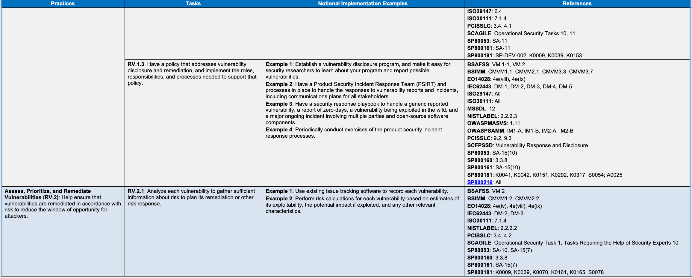
| プラクティス | タスク | 想定実装例 | 参考文献 |
| ISO29147: 6.4 | |||
| ISO30111: 7.1.4 | |||
| PCISSLC: 3.4, 4.1 | |||
| SCAGILE: Operational Security Tasks 10, 11 | |||
| SP80053: SA-11 | |||
| SP800161: SA-11 | |||
| SP800181: SP-DEV-002; K0009, K0039, K0153 | |||
| RV.1.3：脆弱性の開示と修正に関する方針を定め、これを支援する役割、責任、プロセスを実装する。 | 例1：脆弱性開示プログラムを設け、セキュリティ研究者がプログラムを把握して脆弱性の可能性を報告しやすくする。例2：製品セキュリティインシデント対応チーム（PSIRT）とプロセスを整え、すべての関係者向け連絡計画を含め、脆弱性報告とインシデントに対応する。例3：一般的な脆弱性報告、ゼロデイ報告、実環境で悪用されている脆弱性、複数当事者やオープンソース構成要素が関わる重大な進行中インシデントに対応するセキュリティ対応手順書を用意する。例4：製品セキュリティインシデント対応プロセスの演習を定期的に行う。 | BSAFSS: VM.1-1, VM.2 | |
| BSIMM: CMVM1.1, CMVM2.1, CMVM3.3, CMVM3.7 | |||
| EO14028: 4e(viii), 4e(ix) | |||
| IEC62443: DM-1, DM-2, DM-3, DM-4, DM-5 | |||
| ISO29147: All | |||
| ISO30111: All | |||
| MSSDL: 12 | |||
| NISTLABEL: 2.2.2.3 | |||
| OWASPMASVS: 1.11 | |||
| OWASPSAMM: IM1-A, IM1-B, IM2-A, IM2-B | |||
| PCISSLC: 9.2, 9.3 | |||
| SCFPSSD: Vulnerability Response and Disclosure | |||
| SP80053: SA-15(10) | |||
| SP800160: 3.3.8 | |||
| SP800161: SA-15(10) | |||
| SP800181: K0041, K0042, K0151, K0292, K0317; S0054; A0025 | |||
| SP800216: All | |||
| 脆弱性の評価、優先順位付け、修正（RV.2）：リスクに応じて脆弱性を修正し、攻撃者に悪用の機会を与える期間を短縮する。 | RV.2.1：各脆弱性のリスクに関する情報を十分に集めて分析し、修正またはその他のリスク対応を計画する。 | 例1：既存の課題追跡ソフトウェアで各脆弱性を記録する。例2：悪用可能性の推定、悪用された場合の影響、その他の関連特性に基づき、各脆弱性のリスクを算定する。 | BSAFSS: VM.2 |
| BSIMM: CMVM1.2, CMVM2.2 | |||
| EO14028: 4e(iv), 4e(viii), 4e(ix) | |||
| IEC62443: DM-2, DM-3 | |||
| ISO30111: 7.1.4 | |||
| NISTLABEL: 2.2.2.2 | |||
| PCISSLC: 3.4, 4.2 | |||
| SCAGILE: Operational Security Task 1, Tasks Requiring the Help of Security Experts 10 | |||
| SP80053: SA-10, SA-15(7) | |||
| SP800160: 3.3.8 | |||
| SP800161: SA-15(7) | |||
| SP800181: K0009, K0039, K0070, K0161, K0165; S0078 |
原本PDFの抜粋画像
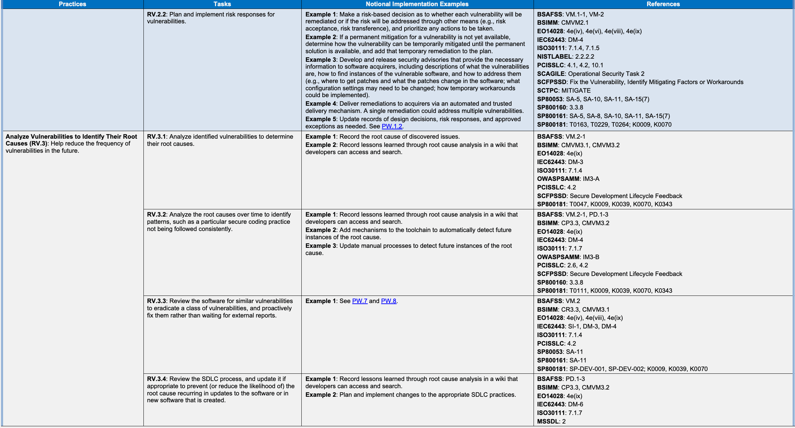
Practices
プラクティス
Tasks
タスク
Notional Implementation Examples
想定実装例
References
参考文献
PCISSLC: 2.6, 4.2 SCFPSSD: Secure Development Lifecycle Feedback SP80053: SA-15 SP800161: SA-15 SP800181: K0009, K0039, K0070
PCISSLC: 2.6, 4.2 SCFPSSD: Secure Development Lifecycle Feedback SP80053: SA-15 SP800161: SA-15 SP800181: K0009, K0039, K0070
References
参考文献
[BSAFSS]
[BSAFSS]
BSA (2020) The BSA Framework for Secure Software: A New Approach to Securing the Software Lifecycle, Version 1.1. Available at https://www.bsa.org/files/reports/bsa_framework_secure_software_update_2020.pdf
BSA（2020）『セキュアソフトウェアのためのBSAフレームワーク：ソフトウェアライフサイクルを保護する新しいアプローチ』第1.1版。入手先：https://www.bsa.org/files/reports/bsa_framework_secure_software_update_2020.pdf
[BSIMM]
[BSIMM]
Migues S, Erlikhman E, Ewers J, Nassery K (2021) BSIMM12 2021 Foundations Report. Available at https://www.bsimm.com/content/dam/bsimm/reports/bsimm12-foundations.pdf
Migues S、Erlikhman E、Ewers J、Nassery K（2021）『BSIMM12 2021 基礎レポート』。入手先：https://www.bsimm.com/content/dam/bsimm/reports/bsimm12-foundations.pdf
[CNCFSSCP] Cloud Native Computing Foundation (2021) Software Supply Chain Best Practices. Available at https://github.com/cncf/tag-security/tree/main/supply-chain-security/supply-chain-security-paper
[CNCFSSCP] Cloud Native Computing Foundation（2021）「Software Supply Chain Best Practices」。入手先：https://github.com/cncf/tag-security/tree/main/supply-chain-security/supply-chain-security-paper
[EO14028]
[EO14028]
Executive Order 14028 (2021) Improving the Nation’s Cybersecurity. (The White House, Washington, DC), DCPD-202100401, May 12, 2021. https://www.govinfo.gov/app/details/DCPD-202100401
大統領令14028（2021）「Improving the Nation’s Cybersecurity」。（ホワイトハウス、ワシントンD.C.）、DCPD-202100401、2021年5月12日。https://www.govinfo.gov/app/details/DCPD-202100401
[IDASOAR]
[IDASOAR]
Hong Fong EK, Wheeler D, Henninger A (2016) State-of-the-Art Resources (SOAR) for Software Vulnerability Detection, Test, and Evaluation 2016. (Institute for Defense Analyses [IDA], Alexandria, VA), IDA Paper P-8005. Available at https://www.ida.org/research-and-publications/publications/all/s/st/stateoftheart-resources-soar-for-software-vulnerability-detection-test-and-evaluation-2016
Hong Fong EK、Wheeler D、Henninger A（2016）「State-of-the-Art Resources (SOAR) for Software Vulnerability Detection, Test, and Evaluation 2016」。（Institute for Defense Analyses［IDA］、バージニア州アレクサンドリア）、IDA Paper P-8005。入手先：https://www.ida.org/research-and-publications/publications/all/s/st/stateoftheart-resources-soar-for-software-vulnerability-detection-test-and-evaluation-2016
[IEC62443]
[IEC62443]
International Electrotechnical Commission (IEC), Security for industrial automation and control systems – Part 4-1: Secure product development lifecycle requirements, IEC 62443-4-1, 2018. Available at https://webstore.iec.ch/publication/33615
International Electrotechnical Commission（IEC）「Security for industrial automation and control systems – Part 4-1: Secure product development lifecycle requirements」、IEC 62443-4-1、2018年。入手先：https://webstore.iec.ch/publication/33615
[IR7692]
[IR7692]
Waltermire DA, Scarfone KA, Casipe M (2011) Specification for the Open Checklist Interactive Language (OCIL) Version 2.0. (National Institute of Standards and Technology, Gaithersburg, MD), NIST Interagency or Internal Report (IR) 7692. https://doi.org/10.6028/NIST.IR.7692
Waltermire DA、Scarfone KA、Casipe M（2011）「Specification for the Open Checklist Interactive Language (OCIL) Version 2.0」。（米国国立標準技術研究所、メリーランド州ゲイサーズバーグ）、NIST Interagency or Internal Report（IR）7692。https://doi.org/10.6028/NIST.IR.7692
[IR7864]
[IR7864]
LeMay E, Scarfone KA, Mell PM (2012) The Common Misuse Scoring System (CMSS): Metrics for Software Feature Misuse Vulnerabilities. (National Institute of Standards and Technology, Gaithersburg, MD), NIST Interagency or Internal Report (IR) 7864. https://doi.org/10.6028/NIST.IR.7864
LeMay E、Scarfone KA、Mell PM（2012）「The Common Misuse Scoring System (CMSS): Metrics for Software Feature Misuse Vulnerabilities」。（米国国立標準技術研究所、メリーランド州ゲイサーズバーグ）、NIST Interagency or Internal Report（IR）7864。https://doi.org/10.6028/NIST.IR.7864
[IR8397]
[IR8397]
Black P, Guttman B, Okun V (2021) Guidelines on Minimum Standards for Developer Verification of Software. (National Institute of Standards and Technology, Gaithersburg, MD), NIST Interagency or Internal Report (IR) 8397. https://doi.org/10.6028/NIST.IR.8397
Black P、Guttman B、Okun V（2021）「Guidelines on Minimum Standards for Developer Verification of Software」。（米国国立標準技術研究所、メリーランド州ゲイサーズバーグ）、NIST Interagency or Internal Report（IR）8397。https://doi.org/10.6028/NIST.IR.8397
[ISO27034]
[ISO27034]
International Organization for Standardization (ISO)/International Electrotechnical Commission (IEC), Information technology – Security techniques – Application security – Part 1: Overview and concepts, ISO/IEC 27034-1:2011, 2011. Available at https://www.iso.org/standard/44378.html
International Organization for Standardization（ISO）／International Electrotechnical Commission（IEC）「Information technology – Security techniques – Application security – Part 1: Overview and concepts」、ISO/IEC 27034-1:2011、2011年。入手先：https://www.iso.org/standard/44378.html
[ISO29147]
[ISO29147]
International Organization for Standardization (ISO)/International Electrotechnical Commission (IEC), Information technology – Security techniques – Vulnerability disclosure, ISO/IEC 29147:2018, 2018. Available at https://www.iso.org/standard/72311.html
International Organization for Standardization（ISO）／International Electrotechnical Commission（IEC）「Information technology – Security techniques – Vulnerability disclosure」、ISO/IEC 29147:2018、2018年。入手先：https://www.iso.org/standard/72311.html
[ISO30111]
[ISO30111]
International Organization for Standardization (ISO)/International Electrotechnical Commission (IEC), Information technology – Security techniques – Vulnerability handling processes, ISO/IEC 30111:2019, 2019. Available at https://www.iso.org/standard/69725.html
International Organization for Standardization（ISO）／International Electrotechnical Commission（IEC）「Information technology – Security techniques – Vulnerability handling processes」、ISO/IEC 30111:2019、2019年。入手先：https://www.iso.org/standard/69725.html
[MSSDL]
[MSSDL]
Microsoft (2021) Security Development Lifecycle. Available at https://www.microsoft.com/en-us/securityengineering/sdl/
Microsoft（2021）「Security Development Lifecycle」。入手先：https://www.microsoft.com/en-us/securityengineering/sdl/
[NISTCSF]
[NISTCSF]
National Institute of Standards and Technology (2018) Framework for Improving Critical Infrastructure Cybersecurity, Version 1.1. (National Institute of Standards and Technology, Gaithersburg, MD). https://doi.org/10.6028/NIST.CSWP.04162018
National Institute of Standards and Technology（2018）「Framework for Improving Critical Infrastructure Cybersecurity」、バージョン1.1。（National Institute of Standards and Technology、メリーランド州ゲイサーズバーグ）。https://doi.org/10.6028/NIST.CSWP.04162018
[NISTLABEL] Ogata M, Haney J, Merkel W, Phelps A (2022) Recommended Criteria for Cybersecurity Labeling of Consumer Software. (National Institute of Standards and Technology, Gaithersburg, MD). Available at https://www.nist.gov/itl/executive-order-improving-nations-cybersecurity
[NISTLABEL] Ogata M、Haney J、Merkel W、Phelps A（2022）「Recommended Criteria for Cybersecurity Labeling of Consumer Software」。（National Institute of Standards and Technology、メリーランド州ゲイサーズバーグ）。入手先：https://www.nist.gov/itl/executive-order-improving-nations-cybersecurity
[NTIASBOM] National Telecommunications and Information Administration (NTIA) (2021) The Minimum Elements For a Software Bill of Materials (SBOM). Available at https://www.ntia.doc.gov/report/2021/minimum-elements-software-bill-materials-sbom
[NTIASBOM] National Telecommunications and Information Administration（NTIA）（2021）「The Minimum Elements For a Software Bill of Materials (SBOM)」。入手先：https://www.ntia.doc.gov/report/2021/minimum-elements-software-bill-materials-sbom
[OWASPASVS] Open Web Application Security Project (2021) OWASP Application Security Verification Standard 4.0.3. Available at https://github.com/OWASP/ASVS
[OWASPASVS] Open Web Application Security Project（2021）「OWASP Application Security Verification Standard 4.0.3」。入手先：https://github.com/OWASP/ASVS
[OWASPMASVS] Open Web Application Security Project (2021) OWASP Mobile Application Security Verification Standard, Version 1.4.2. Available at https://github.com/OWASP/owasp-masvs/releases
[OWASPMASVS] Open Web Application Security Project（2021）「OWASP Mobile Application Security Verification Standard, Version 1.4.2」。入手先：https://github.com/OWASP/owasp-masvs/releases
[OWASPSAMM] Open Web Application Security Project (2017) Software Assurance Maturity Model Version 1.5. Available at https://www.owasp.org/index.php/OWASP_SAMM_Project
[OWASPSAMM] Open Web Application Security Project（2017）「Software Assurance Maturity Model Version 1.5」。入手先： https://www.owasp.org/index.php/OWASP_SAMM_Project
[OWASPSCVS] Open Web Application Security Project (2020) OWASP Software Component Verification Standard, Version 1.0. Available at https://github.com/OWASP/Software-Component-Verification-Standard
[OWASPSCVS] Open Web Application Security Project（2020）「OWASP Software Component Verification Standard, Version 1.0」。入手先：https://github.com/OWASP/Software-Component-Verification-Standard
[PCISSLC]
[PCISSLC]
Payment Card Industry (PCI) Security Standards Council (2021) Secure Software Lifecycle (Secure SLC) Requirements and Assessment Procedures Version 1.1. Available at https://www.pcisecuritystandards.org/document_library?category=sware_sec#results
Payment Card Industry（PCI）Security Standards Council（2021）「Secure Software Lifecycle (Secure SLC) Requirements and Assessment Procedures Version 1.1」。入手先：https://www.pcisecuritystandards.org/document_library?category=sware_sec#results
[SCAGILE]
[SCAGILE]
Software Assurance Forum for Excellence in Code (2012) Practical Security Stories and Security Tasks for Agile Development Environments. Available at http://www.safecode.org/publication/SAFECode_Agile_Dev_Security0712.pdf
Software Assurance Forum for Excellence in Code（2012）「Practical Security Stories and Security Tasks for Agile Development Environments」。入手先：http://www.safecode.org/publication/SAFECode_Agile_Dev_Security0712.pdf
[SCFPSSD]
[SCFPSSD]
Software Assurance Forum for Excellence in Code (2018) Fundamental Practices for Secure Software Development: Essential Elements of a Secure Development Lifecycle Program, Third Edition. Available at https://safecode.org/wp-content/uploads/2018/03/SAFECode_Fundamental_Practices_for_Secure_Software_Development_March_2018.pdf
Software Assurance Forum for Excellence in Code（2018）「Fundamental Practices for Secure Software Development: Essential Elements of a Secure Development Lifecycle Program」、第3版。入手先：https://safecode.org/wp-content/uploads/2018/03/SAFECode_Fundamental_Practices_for_Secure_Software_Development_March_2018.pdf
[SCSIC]
[SCSIC]
Software Assurance Forum for Excellence in Code (2010) Software Integrity Controls: An Assurance-Based Approach to Minimizing Risks in the Software Supply Chain. Available at http://www.safecode.org/publication/SAFECode_Software_Integrity_Controls0610.pdf
Software Assurance Forum for Excellence in Code（2010）「Software Integrity Controls: An Assurance-Based Approach to Minimizing Risks in the Software Supply Chain」。入手先：http://www.safecode.org/publication/SAFECode_Software_Integrity_Controls0610.pdf
[SCTPC]
[SCTPC]
Software Assurance Forum for Excellence in Code (2017) Managing Security Risks Inherent in the Use of Third-Party Components. Available at https://www.safecode.org/wp-content/uploads/2017/05/SAFECode_TPC_Whitepaper.pdf
Software Assurance Forum for Excellence in Code（2017）「Managing Security Risks Inherent in the Use of Third-Party Components」。入手先：https://www.safecode.org/wp-content/uploads/2017/05/SAFECode_TPC_Whitepaper.pdf
[SCTTM]
[SCTTM]
Software Assurance Forum for Excellence in Code (2017) Tactical Threat Modeling. Available at https://www.safecode.org/wp-content/uploads/2017/05/SAFECode_TM_Whitepaper.pdf
Software Assurance Forum for Excellence in Code（2017）「Tactical Threat Modeling」。入手先：https://www.safecode.org/wp-content/uploads/2017/05/SAFECode_TM_Whitepaper.pdf
[SP80053]
[SP80053]
Joint Task Force (2020) Security and Privacy Controls for Information Systems and Organizations. (National Institute of Standards and Technology, Gaithersburg, MD), NIST Special Publication (SP) 800-53, Rev. 5. Includes updates as of December 10, 2020. https://doi.org/10.6028/NIST.SP.800-53r5
Joint Task Force（2020）「Security and Privacy Controls for Information Systems and Organizations」。（National Institute of Standards and Technology、メリーランド州ゲイサーズバーグ）、NIST Special Publication（SP）800-53、改訂5。2020年12月10日までの更新を含む。https://doi.org/10.6028/NIST.SP.800-53r5
[SP800160]
[SP800160]
Ross R, McEvilley M, Oren J (2016) Systems Security Engineering: Considerations for a Multidisciplinary Approach in the Engineering of Trustworthy Secure Systems. (National Institute of Standards and Technology, Gaithersburg, MD), NIST Special Publication (SP) 800-160, Volume 1. Includes updates as of March 21, 2018. https://doi.org/10.6028/NIST.SP.800-160v1
Ross R、McEvilley M、Oren J（2016）「Systems Security Engineering: Considerations for a Multidisciplinary Approach in the Engineering of Trustworthy Secure Systems」。（National Institute of Standards and Technology、メリーランド州ゲイサーズバーグ）、NIST Special Publication（SP）800-160、第1巻。2018年3月21日までの更新を含む。https://doi.org/10.6028/NIST.SP.800-160v1
[SP800161]
[SP800161]
Boyens J, Smith A, Bartol N, Winkler K, Holbrook A, Fallon M (2021) Cybersecurity Supply Chain Risk Management Practices for Systems and Organizations. (National Institute of Standards and Technology, Gaithersburg, MD), Second Draft NIST Special Publication (SP) 800-161, Rev. 1. https://doi.org/10.6028/NIST.SP.800-161r1-draft2
Boyens J、Smith A、Bartol N、Winkler K、Holbrook A、Fallon M（2021）「Cybersecurity Supply Chain Risk Management Practices for Systems and Organizations」。（National Institute of Standards and Technology、メリーランド州ゲイサーズバーグ）、Second Draft NIST Special Publication（SP）800-161、改訂1。https://doi.org/10.6028/NIST.SP.800-161r1-draft2
[SP800181]
[SP800181]
Newhouse W, Keith S, Scribner B, Witte G (2017) National Initiative for Cybersecurity Education (NICE) Cybersecurity Workforce Framework. (National Institute of Standards and Technology, Gaithersburg, MD), NIST Special Publication (SP) 800-181. https://doi.org/10.6028/NIST.SP.800-181
Newhouse W、Keith S、Scribner B、Witte G（2017）「National Initiative for Cybersecurity Education (NICE) Cybersecurity Workforce Framework」。（National Institute of Standards and Technology、メリーランド州ゲイサーズバーグ）、NIST Special Publication（SP）800-181。https://doi.org/10.6028/NIST.SP.800-181
[SP800216]
[SP800216]
Schaffer K, Mell P, Trinh H (2021) Recommendations for Federal Vulnerability Disclosure Guidelines. (National Institute of Standards and Technology, Gaithersburg, MD), Draft NIST Special Publication (SP) 800-216. https://doi.org/10.6028/NIST.SP.800-216-draft
Schaffer K、Mell P、Trinh H（2021）「Recommendations for Federal Vulnerability Disclosure Guidelines」。（National Institute of Standards and Technology、メリーランド州ゲイサーズバーグ）、Draft NIST Special Publication（SP）800-216。https://doi.org/10.6028/NIST.SP.800-216-draft
The SSDF and Executive Order 14028
SSDFと大統領令14028
The President’s Executive Order (EO) on “Improving the Nation’s Cybersecurity (14028)” issued on May 12, 2021 [EO14028], charged multiple agencies – including NIST – with enhancing cybersecurity through a variety of initiatives related to the security and integrity of the software supply chain.
2021年5月12日に発令された大統領令（EO）14028「国家のサイバーセキュリティの向上」[EO14028]は、NISTを含む複数の機関に対し、ソフトウェア・サプライチェーンのセキュリティと完全性に関するさまざまな取り組みを通じて、サイバーセキュリティを強化するよう指示した。
Section 4 of the EO directed NIST to solicit input from the private sector, academia, government agencies, and others and to identify existing or develop new standards, tools, best practices, and other guidelines to enhance software supply chain security. Table 2 maps the subsections from Section 4e of the EO to SSDF practices and tasks that can help address each subsection as part of a risk-based approach.
EO第4節は、民間企業、学界、政府機関などから意見を募り、ソフトウェア・サプライチェーンのセキュリティを強化するため、既存の標準、ツール、ベストプラクティス、その他の指針を特定するか、新たに策定するようNISTに指示した。表2は、EO第4節(e)の各小項と、リスクベースのアプローチの一環として対応に役立つSSDFの実践およびタスクを対応付けている。
Table 2: SSDF Practices Corresponding to EO 14028 Subsections
表2：EO 14028の各小項に対応するSSDFの実践
| EO 14028 | SSDF Practices and Tasks |
| Subsection | |
| 4e(i)(A) | PO.5.1 |
| 4e(i)(B) | PO.5.1 |
| 4e(i)(C) | PO.5.1, PO.5.2 |
| 4e(i)(D) | PO.5.1 |
| 4e(i)(E) | PO.5.2 |
| 4e(i)(F) | PO.3.2, PO.3.3, PO.5.1, PO.5.2 |
| 4e(ii) | PO.3.2, PO.3.3, PO.5.1, PO.5.2 |
| 4e(iii) | PO.3.1, PO.3.2, PO.5.1, PO.5.2, PS.1.1, PS.2.1, PS.3.1, PW.4.1, PW.4.4 |
| 4e(iv) | PO.4.1, PO.4.2, PS.1.1, PW.2.1, PW.4.4, PW.5.1, PW.6.1, PW.6.2, PW.7.1, PW.7.2, PW.8.2, PW.9.1, PW.9.2, RV.1.1, RV.1.2, RV.2.1, RV.2.2, RV.3.3 |
| 4e(v) | PO.3.2, PO.3.3, PO.4.1, PO.4.2, PO.5.1, PO.5.2, PW.1.2, PW.2.1, PW.7.2, PW.8.2, RV.2.2 |
| 4e(vi) | PO.1.3, PO.3.2, PO.5.1, PO.5.2, PS.3.1, PS.3.2, PW.4.1, PW.4.4, RV.1.1, RV.1.2 |
| 4e(vii) | PS.3.2 |
| 4e(viii) | RV.1.1, RV.1.2, RV.1.3, RV.2.1, RV.2.2, RV.3.3 |
| 4e(ix) | All practices and tasks consistent with a risk-based approach |
| 4e(x) | PS.2.1, PS.3.1, PS.3.2, PW.4.1, PW.4.4 |
原本PDFの抜粋画像
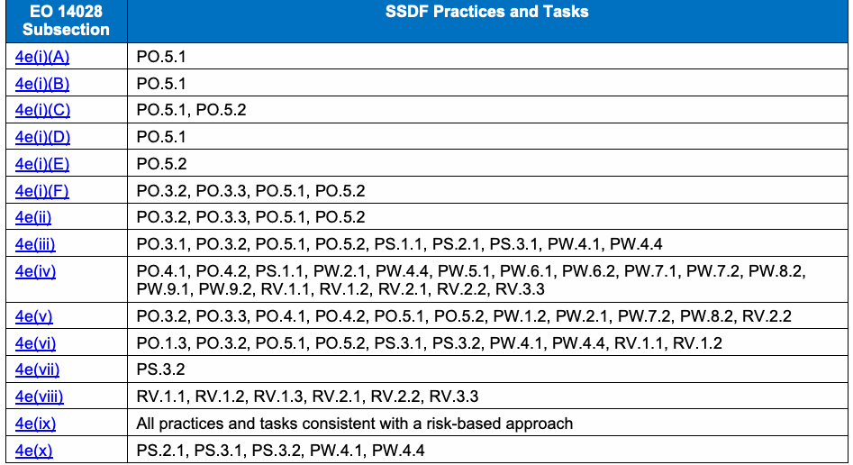
| 大統領令14028 | SSDFのプラクティスとタスク |
| 小項 | |
| 4e(i)(A) | PO.5.1 |
| 4e(i)(B) | PO.5.1 |
| 4e(i)(C) | PO.5.1, PO.5.2 |
| 4e(i)(D) | PO.5.1 |
| 4e(i)(E) | PO.5.2 |
| 4e(i)(F) | PO.3.2, PO.3.3, PO.5.1, PO.5.2 |
| 4e(ii) | PO.3.2, PO.3.3, PO.5.1, PO.5.2 |
| 4e(iii) | PO.3.1, PO.3.2, PO.5.1, PO.5.2, PS.1.1, PS.2.1, PS.3.1, PW.4.1, PW.4.4 |
| 4e(iv) | PO.4.1, PO.4.2, PS.1.1, PW.2.1, PW.4.4, PW.5.1, PW.6.1, PW.6.2, PW.7.1, PW.7.2, PW.8.2, PW.9.1, PW.9.2, RV.1.1, RV.1.2, RV.2.1, RV.2.2, RV.3.3 |
| 4e(v) | PO.3.2, PO.3.3, PO.4.1, PO.4.2, PO.5.1, PO.5.2, PW.1.2, PW.2.1, PW.7.2, PW.8.2, RV.2.2 |
| 4e(vi) | PO.1.3, PO.3.2, PO.5.1, PO.5.2, PS.3.1, PS.3.2, PW.4.1, PW.4.4, RV.1.1, RV.1.2 |
| 4e(vii) | PS.3.2 |
| 4e(viii) | RV.1.1, RV.1.2, RV.1.3, RV.2.1, RV.2.2, RV.3.3 |
| 4e(ix) | リスクベースのアプローチと整合するすべてのプラクティスとタスク |
| 4e(x) | PS.2.1, PS.3.1, PS.3.2, PW.4.1, PW.4.4 |
To coincide with the release of this document, NIST has also published guidance on how software producers and acquirers can communicate with each other regarding attestation of conformance with EO 14028 Section 4e.
本書の公開に合わせ、NISTは、ソフトウェアの生産者と取得者がEO 14028第4節(e)への適合証明について相互に伝達する方法に関する指針も公表した。
Acronyms
略語
Selected acronyms and abbreviations used in this document are defined below.
本書で使用する主な頭字語と略語を以下に定義する。
BSIMM
BSIMM
Building Security In Maturity Model
セキュリティ構築成熟度モデル
CISQ
CISQ
Consortium for Information & Software Quality
情報・ソフトウェア品質コンソーシアム
CNCF
CNCF
Cloud Native Computing Foundation
クラウドネイティブ・コンピューティング財団
COTS
COTS
Commercial-Off-the-Shelf
市販既製品
CPS
CPS
Cyber-Physical System
サイバーフィジカル・システム
DevOps
DevOps
Development and Operations
開発と運用
EO
EO
Executive Order
大統領令
GOTS
GOTS
Government-Off-the-Shelf
政府向け既製品
GSA
GSA
General Services Administration
米国一般調達局
ICS
ICS
Industrial Control System
産業用制御システム
IDA
IDA
Institute for Defense Analyses
国防分析研究所
IEC
IEC
International Electrotechnical Commission
国際電気標準会議
IoT
IoT
Internet of Things
モノのインターネット
IR
IR
Interagency or Internal Report
省庁間報告書または内部報告書
ISO
ISO
International Organization for Standardization
国際標準化機構
ISPAB
ISPAB
Information Security and Privacy Advisory Board
情報セキュリティ・プライバシー諮問委員会
IT
IT
Information Technology
情報技術
ITL
ITL
Information Technology Laboratory
情報技術研究所
KPI
KPI
Key Performance Indicator
主要業績評価指標
KRI
KRI
Key Risk Indicator
主要リスク指標
MITA
MITA
Medical Imaging & Technology Alliance
医用画像・技術同盟
NAVSEA
NAVSEA
Naval Sea Systems Command
米国海軍海上システム司令部
NICE
NICE
National Initiative for Cybersecurity Education
国家サイバーセキュリティ教育イニシアチブ
NIST
NIST
National Institute of Standards and Technology
米国国立標準技術研究所
NTIA
NTIA
National Telecommunications and Information Administration
米国国家電気通信情報庁
OLIR
OLIR
National Online Informative References Program
国家オンライン参考情報プログラム
OWASP
OWASP
Open Web Application Security Project
Open Web Application Security Project（オープンウェブアプリケーションセキュリティプロジェクト）
PCI
PCI
Payment Card Industry
ペイメントカード業界
PSIRT
PSIRT
Product Security Incident Response Team
製品セキュリティインシデント対応チーム
SAFECode
SAFECode
Software Assurance Forum for Excellence in Code
コードの卓越性のためのソフトウェア保証フォーラム
SAMM
SAMM
Software Assurance Maturity Model
ソフトウェア保証成熟度モデル
SBOM
SBOM
Software Bill of Materials
ソフトウェア部品表
SDL
SDL
[Microsoft] Security Development Lifecycle
［Microsoft］セキュリティ開発ライフサイクル
SDLC
SDLC
Software Development Life Cycle
ソフトウェア開発ライフサイクル
SEI
SEI
Software Engineering Institute
ソフトウェア工学研究所
SLC
SLC
Software Lifecycle
ソフトウェアライフサイクル
SOAR
SOAR
State-of-the-Art Resources
最先端リソース
SSDF
SSDF
Secure Software Development Framework
セキュアソフトウェア開発フレームワーク
Change Log
変更履歴
This appendix summarizes the most noteworthy changes made to the SSDF since the original SSDF published in April 2020.
この付録では、2020年4月に公開された初版SSDF以降の主な変更点をまとめる。
This version (published February 2022)
今回の版（2022年2月公開）
•Tasks
•タスク
•Deleted PW.4.5 (merged into PW.4.4)
•PW.4.5を削除（PW.4.4に統合）
•Notional Implementation Examples
•想定実装例
•Added numerous examples suggested via public comments
•公開コメントで提案された例を多数追加
•Added “Example X” to the beginning of each notional informative example
•各想定実装例の冒頭に「Example X」を追加
•References
•参考文献
•Added EO14028, NISTLABEL, SP800161, SP800216
•EO14028、NISTLABEL、SP800161、SP800216を追加
•Updated BSIMM, OWASPASVS, OWASPMASVS
•BSIMM、OWASPASVS、OWASPMASVSを更新
•Updated NISTDVS to IR8397
•NISTDVSをIR8397に更新
•Editorial
•編集上の変更
•Made minor wording changes throughout the document
•文書全体の表現を軽微に修正
•Added definitions of “provenance,” “artifact,” and “evidence”
•「provenance」「artifact」「evidence」の定義を追加
Draft published September 2021
2021年9月公開のドラフト
•Practices
•プラクティス
•Added PO.5
•PO.5を追加
•Deleted PW.3 (merged into PW.4)
•PW.3を削除（PW.4に統合）
•Tasks
•タスク
•Added PO.1.2, PO.5.1, PO.5.2, PS.3.2, PW.1.2
•PO.1.2、PO.5.1、PO.5.2、PS.3.2、PW.1.2を追加
•Moved PW.3.1 to PO.1.3; moved PW.3.2 to PW.4.5; moved PW.4.3 to PW.1.3
•PW.3.1をPO.1.3へ、PW.3.2をPW.4.5へ、PW.4.3をPW.1.3へ移動
•Demoted PW.5.2 to a PW.5.1 example
•PW.5.2をPW.5.1の実装例に格下げ
•References
•参考文献
•Added CNCFSSCP, IEC62443, ISO29147, ISO30111, NISTDVS, OWASPMASVS, OWASPSCVS
•CNCFSSCP、IEC62443、ISO29147、ISO30111、NISTDVS、OWASPMASVS、OWASPSCVSを追加
•Updated BSAFSS, BSIMM, OWASPASVS, PCISSLC
•BSAFSS、BSIMM、OWASPASVS、PCISSLCを更新
•Deleted OWASPTEST
•OWASPTESTを削除
•SSDF Table Conventions
•SSDF表の表記規則
•Retired identifiers for deleted/moved practices and tasks (PW.3, PW.3.1, PW.3.2, PW.4.3, and PW.5.2)
•削除・移動したプラクティスとタスク（PW.3、PW.3.1、PW.3.2、PW.4.3、PW.5.2）の識別子を廃止
•Added colored borders and shaded rows for each group of practices; indicated retired practices and tasks by a lack of shading
•各プラクティス群に色付きの枠線と網掛け行を追加し、廃止項目は網掛けなしで示した
•Converted the content from a white paper to a Special Publication 800-series document
•内容をホワイトペーパーからSpecial Publication 800シリーズ文書に変更
•Added Appendix A
•付録Aを追加